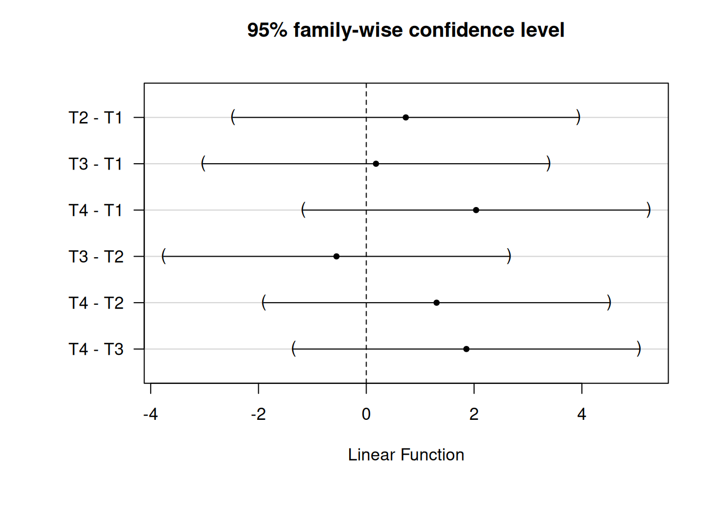
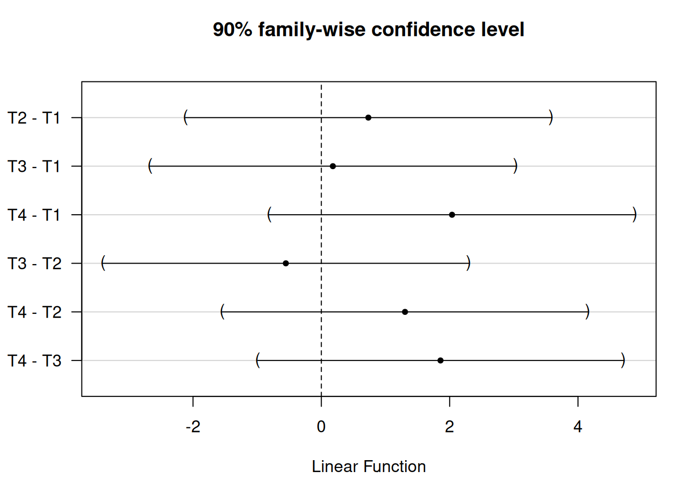

Chapter 5 Analysis choices
We’ve organized our discussion of analysis techniques around a study’s randomization design. But there are a few general tactics that we use to ensure that we can make transparent, valid, and statistically precise statements about the results from our evaluations. We’ll start this chapter by reviewing those.
First, the nature of the data that we expect to see from a given experiment informs our analysis plans. For example, we may make some choices based on the nature of the outcome—a binary outcome, a symmetrically distributed continuous outcome, and a heavily skewed continuous outcome each could each call for different analytical approaches.
Second, we tend to ask three different questions in each of our studies, and we answer them with different statistical procedures:
- Can we detect an effect in our experiment? (We use hypothesis tests to answer this question.)
- What is our best guess about the size of the effect of the experiment? (We estimate the average treatment effect of our interventions to answer this question.)
- How precise is our guess? (We report confidence intervals or standard errors to answer this question.)
Finally, in the Analysis Plans that we post online before receiving outcome data for a project, we try to anticipate many common decisions involved in data analysis—how we will treat missing data, how we will rescale, recode, and combine columns of raw data, etc. We touch on some of these topics in more detail below, and will cover others further in the future.
5.1 Completely randomized trials
5.1.1 Two arms
5.1.1.1 Continuous outcomes
In a completely randomized trial where outcomes take on many levels (units like times, counts of events, dollars, percentages, etc.) it is typical to assess the weak null hypothesis of no average treatment effect across units. But we may also (or instead) assess the sharp null hypothesis of no effect for any unit. What we call the “weak null” here corresponds to the null evaluated by default in many software packages (like R and Stata) when implementing procedures like a difference-in-means test or a linear regression. Meanwhile, the sharp null is evaluated when conducting a hypothesis test through a design based randomization inference procedure (see Chapter 3). Particularly in small samples, tests of the sharp null may be better powered (Reichardt and Gollob 1999). It may also be possible to justify a hypothesis test of the sharp null in some limited situations where justifying other procedures is more difficult (D. B. Rubin 1986).16
5.1.1.1.1 Estimating the average treatment effect and testing the weak null of no average effect
We show the kind of code we use for these purposes here. Below, Y is the outcome variable and Z is an indicator of the assignment to treatment.
## This function comes from the estimatr package
estAndSE1 <- difference_in_means(Y ~ Z,data = dat1)
print(estAndSE1)** Similarly to the R code, estimate the difference
** in means assuming unequal variance across treatment groups.
** There isn't a perfect Stata equivalent providing a
** design-based difference in means estimator.
ttest y, by(z) unequalDesign: Standard
Estimate Std. Error t value Pr(>|t|) CI Lower CI Upper DF
Z 4.637 1.039 4.465 8.792e-05 2.524 6.75 33.12Notice that the standard errors that we use are not the default OLS errors:
estAndSE1OLS <- lm(Y~Z,data=dat1)
summary(estAndSE1OLS)$coefreg y z Estimate Std. Error t value Pr(>|t|)
(Intercept) 2.132 0.4465 4.775 6.283e-06
Z 4.637 0.8930 5.193 1.123e-06The standard errors we often prefer, HC2, can be justified under random assignment of treatment in a sufficiently large sample without any need to assume that we’re sampling from a larger population (again, see Chapter 3 for more). Specifically, Lin (2013) and Samii and Aronow (2012) show that the standard error estimator of an unbiased average treatment effect within a “finite-sample” or design based framework is equivalent to the HC2 standard error. In R, these SEs are produced by default by the estimatr package’s function difference_in_means() and lm_robust(). They can also be produced, for instance, using the vcovHC() function from the sandwich package or the lmtest package’s coeftest() and coefci() functions. In Stata, when using regress, these can be estimated using the vce(hc2) option (they are not the default used by the robust option). Some other Stata commands offer a similar option; check the help file to see.
Our preference for HC2 errors follows from their randomization design based justification, but most researchers likely encounter them as one of several methods of correcting OLS standard errors for heteroscedasticity. Essentially, this means that the variance of the regression model’s error term is not constant across observations. Classical OLS standard errors assume away heteroscedasticity, which may render them meaningfully inaccurate when heteroscedasticity is present. When using OLS to analyze data from a two-arm randomized trial, heteroscedasticity might appear because the variance of the outcome is different in the treatment and control groups. This is common.
5.1.1.1.2 Testing the sharp null of no effects
We can assess the sharp null of no effects via randomization inference as a check on the assumptions underlying more traditional statistical inference calculations. As discussed in Chapter 3, we might also prefer randomization inference on philosophical grounds, or in settings where it is not clear how to calculate the “correct” standard errors (or in situations where the correct method is complex).
When conducting randomization inference, we need to first choose a test statistic. We then compare the observed test statistic in our real sample to its simulated distribution under many random permutations of treatment (and under an assumption that the sharp null of no effects for any unit is true). Often, the test statistic would just be the average treatment effect (ATE) we wish to estimate. But it could also be a -statistic as in standard large sample inference calculations, or perhaps something like a rank-based statistic if we were concerned about skewed outcome data reducing our statistical power. In the interests of simplicity, we will generally use treatment effect estimates themselves as test statistics in our examples.
A basic randomization inference procedure is as follows:
Estimate the treatment effect of interest using the real treatment indicator: . As we note above, you could use some other statistic here instead, such as a t-statistic or a rank-based statistic.
Randomly reassign treatment times, each time following the same assignment procedure used originally. Estimate a treatment effect using each of the simulated re-assignments: . This yields a distribution of treatment effects under the sharp null (the “randomization distribution”).
Compare the treatment effect to its randomization distribution to estimate a (two-sided) p-value:17
Below, we show how to implement this approach using two different R packages and several Stata commands. First, lets look at the coin package (Hothorn et al. 2023) in R and permute in Stata:
## The coin package
set.seed(12345)
# Compare means
test1coinT <- oneway_test(Y~factor(Z),data=dat1,distribution=approximate(nresample=1000))
test1coinT
# Rank test 1
test1coinR<- oneway_test(rankY~factor(Z),data=dat1,distribution=approximate(nresample=1000))
test1coinR
# Rank test 2
test1coinWR <- wilcox_test(Y~factor(Z),data=dat1,distribution=approximate(nresample=1000))
test1coinWR** The permute command
set seed 12345
* Compare means
permute z z = _b[z], reps(1000) nodots: reg y z // OR: permtest2 y, by(z) simulate runs(1000)
* Rank test 1
egen ranky = rank(y)
permute z z = _b[z], reps(1000) nodots: reg ranky z
* Rank test 2
permute z z = r(z), reps(1000) nodots: ranksum y, by(z)
* OR: ranksum y, by(z) exact // exact, not approximate
Approximative Two-Sample Fisher-Pitman Permutation Test
data: Y by factor(Z) (0, 1)
Z = -4.6, p-value <0.001
alternative hypothesis: true mu is not equal to 0
Approximative Two-Sample Fisher-Pitman Permutation Test
data: rankY by factor(Z) (0, 1)
Z = -4.9, p-value <0.001
alternative hypothesis: true mu is not equal to 0
Approximative Wilcoxon-Mann-Whitney Test
data: Y by factor(Z) (0, 1)
Z = -4.9, p-value <0.001
alternative hypothesis: true mu is not equal to 0Next, the ri2 R package (Coppock 2022) and ritest in Stata (notice that the p-values here round to 0):
## The ri2 package
thedesign1 <- randomizr:::declare_ra(N=ndat1,m=sum(dat1$Z))
test1riT <- conduct_ri(Y~Z,declaration=thedesign1,sharp_hypothesis=0,data=dat1,sims=1000)
tidy(test1riT)
test1riR <- conduct_ri(rankY~Z,declaration=thedesign1,sharp_hypothesis=0,data=dat1,sims=1000)
tidy(test1riR)** The ritest command
* ssc install ritest
ritest z z = _b[z], nodots reps(1000): reg y z
ritest z z = r(z), nodots reps(1000): ranksum y, by(z) Random assignment procedure: Complete random assignment
Number of units: 100
Number of treatment arms: 2
The possible treatment categories are 0 and 1.
The number of possible random assignments is approximately infinite.
The probabilities of assignment are constant across units:
prob_0 prob_1
0.75 0.25
term estimate p.value
1 Z 4.637 0
term estimate p.value
1 Z 30.8 0It is also relatively common for OES evaluations to encounter situations where these canned approaches aren’t viable. It is useful to be able to program randomization inference manually. We provide templates for how this could be done in the code below, focusing on complete random assignment. This yields similar results to the canned functions above.
## Define a function to re-randomize a single time
## and return the desired test statistic.
ri_draw <- function() {
## Using randomizr
dat1$riZ <- complete_ra(N = nrow(dat1), m = sum(dat1$Z))
## Or base R
# dat1$riZ <- sample(dat1$Z, length(dat1$Z), replace = F)
## Return the test statistic of interest.
## Simplest is the difference in means itself.
return( with(dat1, lm(Y ~ riZ))$coefficients["riZ"] )
}
## We'll use replicate to repeat this many times.
ri_dist <- replicate(n = 1000, expr = ri_draw(), simplify = T)
## A loop would also work.
# i <- 1
# ri_dist <- matrix(NA, 1000, 1)
# for (i in 1:1000) {
# ri_dist[i] <- ri_draw()
# }
## Get the real test statistic and calculate the p-value.
# How often do different possible treatment assignments,
# under a sharp null, yield test statistics with a magnitude
# at least as large as our real statistic?
real_stat <- with(dat1, lm(Y ~ Z))$coefficients["Z"]
ri_p_manual <- mean(abs(ri_dist) >= abs(real_stat))
## Compare to test1riT
ri_p_manual** Define a program to re-randomize a single time
** and return a desired test statistic.
capture program drop ri_draw
program define ri_draw, rclass
** Using randomizr (Stata version)
capture drop riZ
qui sum z
local zsum = r(sum)
complete_ra riZ, m(`zsum')
** Or manually
/*
gen rand = runiform()
sort rand
qui sum z
gen riZ = 1 in 1/r(sum)
replace riZ = 0 if missing(riZ)
drop rand
*/
** Return the test statistic of interest.
** Simplest is the difference in means itself.
qui reg y riZ
return scalar riZ = _b[riZ]
end
** We'll use simulate to repeat this many times.
** Nested within preserve/restore to return to our data after.
preserve
** Get the real test statistic
qui reg y z
local real_stat = _b[z]
** Perform the simulation itself
simulate ///
riZ = r(riZ), ///
reps(1000): ///
ri_draw
** Calculate the p-value.
* How often do different possible treatment assignments,
* under a sharp null, yield test statistics with a magnitude
* at least as large as our real statistic?
gen equal_or_greater = abs(riZ) >= abs(`real_stat')
qui sum equal_or_greater
local ri_p_manual = r(mean)
** Compare to output from permute or ritest above
di `ri_p_manual'
restore[1] 05.1.1.2 Binary outcomes
We tend to focus on differences in percentage points when we are working with binary outcomes, usually estimated via OLS linear regression. A statement like “the effect was a 5 percentage point increase” has made communication with partners easier than a discussion in terms of log odds or odds ratios. We also avoid logistic regression coefficients because of a problem noticed by Freedman (2008b) in some cases when estimating an average treatment effect under covariate adjustment (though whether this concern is relevant depends on how the Logit model is specified and used).
5.1.1.2.1 Estimating the average treatment effect and testing the weak null of no average effect
We can estimate effects and produce standard errors for differences of proportions using the same process as above. The average treatment effect estimate here represents the difference in the proportions of positive responses (i.e., ) between treatment conditions. The standard error is still valid because it is calculated using a procedure justified by the study’s design rather than assumptions about the outcome.
## Make some binary outcomes
dat1$u <- runif(ndat1)
dat1$v <- runif(ndat1)
dat1$y0bin <- ifelse(dat1$u>.5, 1, 0) # control potential outcome
dat1$y1bin <- ifelse((dat1$u+dat1$v) >.75, 1, 0) # treated potential outcomes
dat1$Ybin <- with(dat1, Z*y1bin + (1-Z)*y0bin)
truePropDiff <- mean(dat1$y1bin) - mean(dat1$y0bin)
## Estimate and view the difference in proportions
estAndSE2 <- difference_in_means(Ybin~Z,data=dat1)
estAndSE2** Make some binary outcomes
gen u = runiform()
gen v = runiform()
gen uv = u + v
gen y0bin = cond(u > 0.5, 1, 0) // control potential outcome
gen y1bin = cond(uv > 0.75, 1, 0) // treated potential outcome
gen ybin = (z * y1bin) + ((1 - z) * y0bin)
qui sum y1bin, meanonly
local y1mean = r(mean)
qui sum y0bin, meanonly
global truePropDiff = `y1mean' - r(mean)
** Estimate and view the difference in proportions
ttest ybin, by(z) unequalDesign: Standard
Estimate Std. Error t value Pr(>|t|) CI Lower CI Upper DF
Z 0.1067 0.1112 0.959 0.343 -0.1177 0.331 42.84When we have an experiment that includes a treatment and control group with binary outcomes, and when we are estimating the ATE, the standard error from a difference in proportions test is similar to the design based feasible standard error for an average treatment effect (and therefore similar to HC2 errors). In contrast, classical OLS standard errors with a binary outcome—sometimes called a linear probability model—will be at least slightly incorrect due to inherent heteroscecdasticity (Angrist and Pischke 2009).
To see this in more detail, consider that difference-in-proportion standard errors are estimated with the following equation:
where is the size of the group assigned treatment, is the size of the group assigned control, is the proportion of “successes” in the group assigned treatment, and is the proportion of “successes” in the group assigned control. The fractions above represent the variance of the proportion in each group.
It’s easy to compare this with the feasible standard error equation from chapter 3:
is the vector of observed outcomes under control, and is the vector of observed outcomes under treatment. This equation indicates that we use the observed variances in each treatment group to estimate the feasible design based standard error for an average treatment effect. The code below compares the various standard error estimators discussed here (we refer to the design based SEs here as Neyman SEs).
nt <- sum(dat1$Z)
nc <- sum(1-dat1$Z)
## Find SE for difference of proportions.
p1 <- mean(dat1$Ybin[dat1$Z==1])
p0 <- mean(dat1$Ybin[dat1$Z==0])
frac1 <- (p1*(1-p1))/nt
frac0 <- (p0*(1-p0))/nc
se_prop <- round(sqrt(frac1 + frac0), 4)
## Find Neyman SE
varc_s <- var(dat1$Ybin[dat1$Z==0])
vart_s <- var(dat1$Ybin[dat1$Z==1])
se_neyman <- round(sqrt((vart_s/nt) + (varc_s/nc)), 4)
## Find OLS SE
simpOLS <- lm(Ybin~Z,dat1)
se_ols <- round(coef(summary(simpOLS))["Z", "Std. Error"], 2)
## Find Neyman SE (which are the HC2 SEs)
se_neyman2 <- coeftest(simpOLS,vcov = vcovHC(simpOLS,type="HC2"))[2,2]
se_neyman3 <- estAndSE2$std.error
## Show SEs
se_compare <- as.data.frame(cbind(se_prop, se_neyman, se_neyman2, se_neyman3, se_ols))
rownames(se_compare) <- "SE(ATE)"
colnames(se_compare) <- c("diff in prop", "neyman1","neyman2","neyman3", "ols")
print(se_compare)qui sum z
global nt = r(sum)
tempvar oneminus
gen `oneminus' = 1 - z
qui sum `oneminus'
global nc = r(sum)
** Find SE for difference of proportions.
qui ttest ybin, by(z)
local p1 = r(mu_2)
local p0 = r(mu_2)
local se1 = (`p1' * (1 - `p1'))/$nt
local se0 = (`p0' * (1 - `p0'))/$nc
global se_prop = round(sqrt(`se1' + `se0'), 0.0001)
local se_list $se_prop // Initialize a running list; used in the matrix below
** Find Neyman SE
qui sum ybin if z == 0
local varc_s = r(sd) * r(sd)
qui sum ybin if z == 1
local vart_s = r(sd) * r(sd)
global se_neyman = round(sqrt((`vart_s'/$nt) + (`varc_s'/$nc)), 0.0001)
local se_list `se_list' $se_neyman
** Find OLS SE
qui reg ybin z
global se_ols = round(_se[z], 0.0001) // See also: r(table) (return list) or e(V) (ereturn list)
local se_list `se_list' $se_ols
** Find Neyman SE (which are the HC2 SEs)
qui reg ybin z, vce(hc2)
global se_neyman2 = round(_se[z], 0.0001)
qui ttest ybin, by(z) unequal // See: return list
global se_neyman3 = round(r(se), 0.0001)
local se_list `se_list' $se_neyman2 $se_neyman3
** Show SEs
matrix se_compare = J(1, 5, .)
matrix colnames se_compare = "diff in prop" "neyman1" "ols" "neyman2" "neyman3"
local i = 0
foreach l of local se_list {
local ++i
matrix se_compare[1, `i'] = `l'
}
matrix list se_compare diff in prop neyman1 neyman2 neyman3 ols
SE(ATE) 0.1094 0.1112 0.1112 0.1112 0.115.1.1.2.2 Testing the sharp null of no effects
With a binary treatment and a binary outcome, we could test the hypothesis that outcomes are totally independent of treatment assignment using what is called Fisher’s exact test. We could also use the permutation-based approach as outlined above to avoid relying on asymptotic (large-sample) assumptions. Below we show how Fisher’s exact test, the Exact Cochran-Mantel-Haenszel test, and the Exact -squared test produce the same answers.
test2fisher <- fisher.test(x=dat1$Z,y=dat1$Ybin)
print(test2fisher)
test2chisq <- chisq_test(factor(Ybin)~factor(Z),data=dat1,distribution=exact())
print(test2chisq)
test2cmh <- cmh_test(factor(Ybin)~factor(Z),data=dat1,distribution=exact())
print(test2cmh)tabulate z ybin, exact
tabulate z ybin, chi2
* search emh
emh z ybin
Fisher's Exact Test for Count Data
data: dat1$Z and dat1$Ybin
p-value = 0.5
alternative hypothesis: true odds ratio is not equal to 1
95 percent confidence interval:
0.5586 4.7680
sample estimates:
odds ratio
1.574
Exact Pearson Chi-Squared Test
data: factor(Ybin) by factor(Z) (0, 1)
chi-squared = 0.89, p-value = 0.5
Exact Generalized Cochran-Mantel-Haenszel Test
data: factor(Ybin) by factor(Z) (0, 1)
chi-squared = 0.88, p-value = 0.5A difference-in-proportions test can also be performed directly (rather than relying on OLS to approximate this). In that case, the null hypothesis is tested while using a binomial distribution (rather than a Normal distribution) to approximate the underlying randomization distribution. In reasonably-sized samples, both approximations perform well.
mat <- with(dat1,table(Z,Ybin))
matpt <- prop.test(mat[,2:1])
matptprtest ybin, by(z)
2-sample test for equality of proportions with continuity correction
data: mat[, 2:1]
X-squared = 0.5, df = 1, p-value = 0.5
alternative hypothesis: two.sided
95 percent confidence interval:
-0.3477 0.1344
sample estimates:
prop 1 prop 2
0.5733 0.6800 5.2 Multiple tests
5.2.1 Multiple arms
Multiple treatment arms can be analyzed as above, except that we now have
more than one comparison between a treated group and a control group. Such studies raise both substantive and statistical questions about multiple
testing (or “multiple comparisons”). For example, the difference_in_means
function asks which average treatment effect it should estimate, and it
only presents one comparison at a time. We could compare the treatment T2
with the baseline outcome of T1. But we could also compare both of T2 and T3 with T1 at the same time, as in the second set of results (lm_robust implements the same standard errors as difference_in_means, but allows for more flexible model specification).
## Comparing only conditions 1 and 2
estAndSE3 <- difference_in_means(Y~Z4arms,data=dat1,condition1="T1",condition2="T2")
print(estAndSE3)
## Compare each other arm to T1
estAndSE3multarms <- lm_robust(Y~Z4arms,data=dat1)
print(estAndSE3multarms)** Comparing only conditions 1 and 2
ttest y if inlist(z4arms, "T1", "T2"), by(z4arms) unequal
** Compare each other arm to T1
encode z4arms, gen(z4num)
reg y ib1.z4num, vce(hc2) // Set 1 as the reference categoryDesign: Standard
Estimate Std. Error t value Pr(>|t|) CI Lower CI Upper DF
Z4armsT2 0.7329 1.298 0.5647 0.5749 -1.877 3.343 47.67
Estimate Std. Error t value Pr(>|t|) CI Lower CI Upper DF
(Intercept) 2.5541 0.8786 2.9070 0.004532 0.8101 4.298 96
Z4armsT2 0.7329 1.2979 0.5647 0.573593 -1.8433 3.309 96
Z4armsT3 0.1798 1.1582 0.1552 0.876956 -2.1192 2.479 96
Z4armsT4 2.0372 1.2353 1.6491 0.102393 -0.4149 4.489 96In this case, we could make different possible comparisons between pairs of treatment groups. Consider that if there were really no effect of any treatment, and if we chose to reject the null across treatments at the standard significance threshold of , we would incorrectly claim that there was at least one effect more than 5% of the time. , or 27% of the time, we would make a false positive error, claiming an effect existed when it did not.
Two points are worth emphasizing. First, the “family-wise error rate” (FWER) will differ from the individual error rate of any single test. In short, performing multiple tests to draw a conclusion about a single underlying hypothesis increases our chances of incorrectly rejecting a true null at least once. Suppose that we calculated two p-values and compared each to the conventional significance level . The probability of retaining (failing to reject) both hypotheses is and the probability of rejecting at least one of these hypotheses is —almost double our intended significance threshold of across tests.
Second, multiple tests will often be correlated, and optimal corrections for multiple testing incorporate information about these relationships. Importantly, accounting for this correlation will penalize multiple testing less than an adjustment procedure developed under an assumption that tests are uncorrelated. In other words, employing a method that fails to account for any correlations there are between test statistics makes it harder to find a statistically significant result than we actually need to. On the other hand, accounting for these correlations can be complicated, so if we have a pretty large sample we may sometimes decide that ease of implementation is worth leaving some statistical power on the table.
To be clear, when we say that tests are “correlated,” we mean that there is some relationship between the test statistics (e.g., a student’s t-statistic, or a statistic) used to perform statistical inference. It means that the test statistics are jointly distributed—when one is higher, the other will tend to be higher as well.18 This will generally be the case when analyzing a randomized trial with multiple treatment arms.
Our default procedure for evaluating multi-arm trials is as follows:
First, decide on an omnibus confirmatory comparison for the entire evaluation: say, control/status quo versus receiving any version of the treatment. Such a test would likely have more statistical power than a test that evaluates each arm separately, and would also have a correctly controlled false positive rate. This would then serve as the primary finding we report.
Second, perform the rest of the comparisons as exploratory analyses without multiple testing adjustment—i.e., as analyses that may inform future projects and suggest where we might be seeing more or less of an effect, but which cannot serve as a foundation for policy conclusions on their own.
Alternatively, if we do want to make multiple confirmatory comparisons, we need to adjust their collective false positive rate.19 The best method varies. Options include:
Canned procedures like Holm-Bonferroni adjustment (ignore correlations between tests)
- Good when we want to do something simple and are willing to accept a some loss of statistical power
The Tukey HSD procedure for pairwise comparisons of multiple treatment arms
- Good when we want to account for correlated test statistics and are analyzing a relatively simple multi-arm trial
Simulations to calculate a significance threshold that properly controls the collective error rate;20
- Good when we want to account for correlated test statistics in a more complicated situation
Testing in a specific order to protect the familywise error rate (Paul R. Rosenbaum 2008).
- Good when it makes theoretical sense to test the hypotheses in a particular order (e.g., maybe the second hypothesis test is only interesting if we see a particular result in the first test)
5.2.1.1 Adjusting for multiple comparisons
We review some of the adjustment options listed above in more detail, with coded examples.
First, if we want to rely on relatively simple procedures that only require the p-values themselves (i.e., not the underlying data), we might hold the familywise error rate at through either a single step correction (e.g. Bonferroni) or a stepwise correction (such as Holm-Bonferroni). We could also use a procedure that controls the false discovery rate instead (e.g., the Benjamini-Hochberg correction). These adjustments are derived assuming the included tests are uncorrelated. As discussed above, it is still valid to apply them to correlated tests, they will just be too conservative (i.e., we’ll sacrifice some statistical power). Our default practice when dealing with multiple uncorrelated tests is to apply the Holm-Bonferroni correction. For more, see EGAP’s 10 Things you need to know about multiple comparisons.
## Get p-values but exclude intercept
pvals <- summary(estAndSE3multarms)$coef[2:4,4]
## Illustrate different corrections (or lack thereof).
## Many of these corrections can be applied either as
## p-value adjustments, or by constructing alternative
## significance thresholds. We focus on p-value adjustments:
# None
round(p.adjust(pvals, "none"), 3)
# Bonferroni
round(p.adjust(pvals, "bonferroni"), 3)
# Holm
round(p.adjust(pvals, "holm"), 3)
# Hochberg
round(p.adjust(pvals, "hochberg"), 3) # FDR instead of FWER** Get p-values but exclude intercept
* See also: search parmest
matrix pvals = r(table)["pvalue", 2..4] // save in a matrix
matrix pvalst = pvals' // transpose
svmat pvalst, names(col) // add matrix as data in memory
** Illustrate different corrections (or lack thereof).
** Many of these corrections can be applied either as
** p-value adjustments, or by constructing alternative
** significance thresholds. We focus on p-value adjustments:
* None
replace pvalue = round(pvalue, 0.0001)
list pvalue if !missing(pvalue)
* Bonferroni
* ssc install qqvalue
qqvalue pvalue if !missing(pvalue), method(bonferroni) qvalue(adj_p_bonf)
replace adj_p_bonf = round(adj_p_bonf, 0.0001)
list adj_p_bonf if !missing(pvalue)
* Holm
qqvalue pvalue if !missing(pvalue), method(holm) qvalue(adj_p_holm)
replace adj_p_holm = round(adj_p_holm, 0.0001)
list adj_p_holm if !missing(pvalue)
* Hochberg
qqvalue pvalue if !missing(pvalue), method(hochberg) qvalue(adj_p_hoch)
replace adj_p_hoch = round(adj_p_hoch, 0.0001)
list adj_p_hoch if !missing(pvalue) // FDR instead of FWER[1] "None"
Z4armsT2 Z4armsT3 Z4armsT4
0.574 0.877 0.102
[1] "Bonferroni"
Z4armsT2 Z4armsT3 Z4armsT4
1.000 1.000 0.307
[1] "Holm"
Z4armsT2 Z4armsT3 Z4armsT4
1.000 1.000 0.307
[1] "Hochberg"
Z4armsT2 Z4armsT3 Z4armsT4
0.877 0.877 0.307 Notice that simply adjusting -values from this linear model ignores the fact that we may be interested in other pairwise comparisons, such as the difference in effects between receiving T3 vs T4. And as we’ve cautioned several times now, we could be leaving meaningful statistical power on the table by applying procedures that ignore correlations between our test statistics.
A different option when dealing with multiple comparisons is to implement a Tukey Honestly Signficant Differences (HSD) test. The Tukey HSD test (sometimes called a Tukey range test or just a Tukey test) calculates multiple-comparison-adjusted -values and simultaneous confidence intervals for all pairwise comparisons in a model, while taking into account possible correlations between test statistics. It is similar to a two-sample t-test, but with built in adjustment for multiple comparisons. The test statistic for any comparison between two equally-sized groups and is:
and are the means in groups and , respectively. is the pooled standard deviation of the outcome, and is the common sample size. A critical value is then chosen for given the desired significance level, , the number of groups being compared, , and the degrees of freedom, . We’ll represent this critical value with .
The confidence interval for any difference between equally-sized groups is then:21
We present an R implementation of the Tukey HSD test using the glht() function from the multcomp package, which offers more flexiblity than the
TukeyHSD in the base stats package (at the price of a slightly more complicated syntax). We also illustrate a few options in Stata. But to perform this post-hoc test, we first need to fit an applicable model.
## We can use aov() or lm()
dat1$Z4factor <- as.factor(dat1$Z4arms)
aovmod <- aov(Y~Z4factor, dat1)
##lmmod <- lm(Y~Z4arms, dat1)anova y z4numIn R, using the glht() function’s linfcnt argument, we tell the function to conduct a Tukey test of all pairwise comparisons for our treatment indicator, . In Stata, we can do this using the tukeyhsd command or pwcompare commands.
tukey_mc <- glht(aovmod, linfct = mcp(Z4factor = "Tukey"))
summary(tukey_mc)* search tukeyhsd
* search qsturng
tukeyhsd z4num
* Or: pwcompare z4arms, mcompare(tukey) effects
Simultaneous Tests for General Linear Hypotheses
Multiple Comparisons of Means: Tukey Contrasts
Fit: aov(formula = Y ~ Z4factor, data = dat1)
Linear Hypotheses:
Estimate Std. Error t value Pr(>|t|)
T2 - T1 == 0 0.733 1.226 0.60 0.93
T3 - T1 == 0 0.180 1.226 0.15 1.00
T4 - T1 == 0 2.037 1.226 1.66 0.35
T3 - T2 == 0 -0.553 1.226 -0.45 0.97
T4 - T2 == 0 1.304 1.226 1.06 0.71
T4 - T3 == 0 1.857 1.226 1.51 0.43
(Adjusted p values reported -- single-step method)Focusing on the R results, we can then plot the 95% family wise confidence intervals for these comparisons.
## Save dfault ploting parameters
op <- par()
## Add space to left-hand outer margin
par(oma = c(1, 3, 0, 0))
plot(tukey_mc)
We can also obtain simultaneous confidence intervals at other levels of statistical significance using the confint() function.
## Generate and plot 90% confidence intervals
tukey_mc_90ci <- confint(tukey_mc, level = .90)
plot(tukey_mc_90ci)
See also, in R: pairwise.prop.test for binary outcomes.
Finally, when test statistics are correlated but a Tukey-styled test is not desirable, we could instead employ randomization inference. To do this, we would start by simulating the distribution of p-values observed for each test across many random permutations of treatment (estimating the “randomization distribution” of our correlated test statistics under the sharp null). After that, we would use the distribution of p-values to calculate an alternative significance threshold. By comparing our real p-values to this simulated threshold, we could evaluate statistical significance while properly controling the FWER. We provide examples below for R and Stata. See step 7 on this page for an alternative R code example.
In the code below, we first define a function to randomly re-assign treatment and estimate a p-value for each regression coefficient (based on HC2 errors). We repeatedly call this function 1000 times and save the resulting distribution of p-values. We then define two more functions (find_threshold1 and find_threshold2) that illustrate different methods of calculating an appropriate significance threshold using those p-values (the first may be a little slower, but it walks through the logic in more detail). We also use this simulation to illustrate the advantages of an omnibus approach where we simply perform our confirmatory test using an alternative indicator for receipt of one of the treatment arms.
Both calculation approaches yield similar significance thresholds. And the collective false positive rate when making multiple comparisons is noticably higher than when making a single, omnibus comparison.
## Function to permute treatment and generate
## p-values / null rejection for each of the
## three comparisons (i.e., arm 1 vs each of the other 3)
draw_multiple_arms <- function() {
## Generate a new simulated treatment variable
## (same approach as in chapter 4 to produce the original)
dat1$Z4arms_mt <- complete_ra(nrow(dat1), m_each=rep(nrow(dat1)/4,4))
## Generate a binary indicator for being either T2 or T3.
dat1$treat_any_mt <- ifelse(dat1$Z4arms_mt == "T1", 0, 1)
## Regress the outcome on treatment dummies.
mod_each <- lm_robust(Y ~ as.factor(Z4arms_mt), data = dat1)
## Regress the outcome on the "any treatment" dummy
mod_any <- lm_robust(Y ~ treat_any_mt, data = dat1)
## Is there at least one null rejection
## for the treatment dummies in mod_each?
each <- sum(mod_each$p.value[2:4] <= 0.05) > 0
## Is there a null rejection in mod_any?
any <- mod_any$p.value[2] <= 0.05
## Prepare output (the p-values are used for
## a simulation-based FWER adjustment below)
out <- c(each, any, mod_each$p.value[2:4])
names(out) <- c("unadjusted", "any", "pT2", "pT3", "pT4")
return(out)
}
## Calculate the output of that function 1000 times
multiple_arms <-
## Default output will be a list
replicate(
n = 1000,
draw_multiple_arms(),
simplify = F
) %>%
## Stack the results from each draw as a df instead
purrr::reduce(bind_rows)
## A function to use the p-values produced by the above to
## calculate a simulated significance threshold
## that controls the FWER rate.
## METHOD 1: try many possible thresholds,
## and find the largest one that sets the FWER to
## at least X% (default = 5). Slower, but
## makes the logic of this procedure clearer.
## P-values is a df/matrix where each column is
## the p-value for a different test, and each row
## is a set of p-values from a different iteration.
find_threshold1 <- function(
p_values, # Df of p-values (columns = tests, rows = iterations)
from = 0.001, # Lowest possible threshold to try
to = 0.999, # Highest to try
by = 0.001, # Increments to try
sig_level = 0.05 # Desired max FWER (FW significance level)
) {
## Generate the sequence of thresholds to test
test_thresholds <- seq(from, to, by)
## Create a df for each test_threshold:
## threshold and resulting FWER.
candidates <-
lapply(
## To each test threshold...
test_thresholds,
## ... Apply the following function
## (.x is the test threshold):
function(.x) {
## Convert each p-value to a null rejection indicator
significant <- p_values <= .x
## By row: at least one rejection in this family of tests?
at_least_one <- rowSums(significant) >= 1
## From this, we can get a FWER
type_I_rate <- mean(at_least_one)
## Prepare output
out <- c(.x, type_I_rate)
names(out) <- c("threshold", "fwer")
return(out)
}
) %>%
purrr::reduce(bind_rows)
## Keep only candidate thresholds with less than or
## equal to the target set above (default 5%).
candidates <- candidates[ candidates$fwer <= sig_level, ]
## Find the largest threshold satisfying that criterion.
candidates <- candidates[ order(-candidates$threshold), ]
return(candidates$threshold[1])
}
## Apply this function to calculate the adjusted
## significance threshold
sim_alpha1 <- find_threshold1(multiple_arms[, 3:5])
## Method 2: A less intuitive shortcut that runs faster
find_threshold2 <- function(p_values) {
## Get the minimum p-value in each family of tests
min_p_infamily <- apply(p_values, 1, min)
## The 5th percentile of these is (approx.)
## the simulated threshold we want.
p5 <- quantile(min_p_infamily, 0.05)
return(p5)
}
## Apply this function to calculate the adjusted
## significance threshold
sim_alpha2 <- as.numeric(find_threshold2(multiple_arms[, 3:5]))
## Compare the three simulation approaches:
print("sim_alpha1")
sim_alpha1
print("sim_alpha2")
sim_alpha2
## Notice: the false positive rate is too high
## across replications without accounting for
## multiple tests, but is closer to the right value
## when relying on the simpler "omnibus" indicator
## for receipt of some treatment.
print("False positive rate: separate tests")
mean(multiple_arms$unadjusted)
print("False positive rate: omnibus test")
mean(multiple_arms$any)** Program to permute treatment and generate
** p-values / null rejection for each of the
** three comparisons (i.e., arm 1 vs each of the other 3)
capture program drop draw_multiple_arms
program define draw_multiple_arms, rclass
** Generate a new simulated treatment variable
** (same approach as in chapter 4 to produce the original)
capture drop z4arms_mt
qui count
local count_list = r(N)/4
local count_list : di _dup(4) "`count_list' "
qui complete_ra z4arms_mt, m_each(`count_list')
** Generate a binary indicator for being either T2 or T3
capture drop treat_any_mt
qui gen treat_any_mt = cond(z4arms_mt == 1, 0, 1)
** Regress the outcome on treatment dummies.
** Any of the p-values statistically significant?
qui reg y i.z4arms_mt, vce(hc2)
local each = (r(table)[4,2] <= 0.05) | (r(table)[4,3] <= 0.05) | (r(table)[4,4] <= 0.05)
return scalar each = `each'
return scalar pT2 = r(table)[4,2]
return scalar pT3 = r(table)[4,3]
return scalar pT4 = r(table)[4,4]
** Regress the outcome on the "any treatment" dummy
qui reg y treat_any_mt, vce(hc2)
local any = (r(table)[4,1] <= 0.05)
return scalar any = `any'
end
** Program to avoid some typing when specifying what we want from simulate
capture program drop simlist
program define simlist
local rscalars : r(scalars)
global sim_targets "" // must be a global
foreach item of local rscalars {
global sim_targets "$sim_targets `item' = r(`item')"
}
end
** Calculate the output of that function 1000 times
draw_multiple_arms
simlist
simulate $sim_targets, reps(1000) nodots: draw_multiple_arms
** A program to use the p-values produced by the above to
** calculate a simulated significance threshold
** that controls the FWER rate.
** METHOD 1: try many possible thresholds,
** and find the largest one that sets the FWER to
** at least X% (default = 5). Slower, but
** makes the logic of this procedure clearer.
** P-values is a varlist of vars storing p-values
** from different tests (rows are different iterations,
** columns are assumed to represent different tests)
capture program drop find_threshold1
program define find_threshold1, rclass
syntax, pvalues(varlist) /// P-value varnames
[ to_val(real 0.005) /// Lowest possible threshold to try
from_val(real 0.15) /// Highest to try (starts here)
by_val(real 0.001) /// Increments to try
sig_level(real 0.05) ] // Desired FWER (FW significance level)
** Make list of candidate thresholds
numlist "`from_val'(-`by_val')`to_val'"
local candidate_thresholds `r(numlist)'
** Minimum p-value across tests
tempvar minimum_p_value
qui egen `minimum_p_value' = rowmin(`pvalues')
** Loop through candidate thresholds
foreach l of local candidate_thresholds {
** Indicator for at least one test in each randomization being significant
** under the candidate threshold in question. If the minimum
** is not significant, none of them will be.
tempvar at_least_one
qui gen `at_least_one' = `minimum_p_value' <= `l'
** Get the mean, representing the family-wise type I error rate
** for this threshold. It will be stored internally in r().
qui sum `at_least_one', meanonly
** Evaluate if we're at the target FW type I error rate yet.
** If we are, save the threshold and stop the loop.
if (`r(mean)' <= `sig_level') {
return scalar alpha_fwer = `l'
continue, break
}
}
end
** Apply this program to calculate the adjusted
** significance threshold
find_threshold1, pvalues(pT3 pT2 pT4)
global sim_alpha1 = r(alpha_fwer)
** Method 2: A less intuitive shortcut that runs faster
capture program drop find_threshold2
program define find_threshold2, rclass
syntax, pvalues(varlist)
** Get the minimum p-value in each family of tests
capture drop minp
egen minp = rowmin(`pvalues')
qui sum minp, d
** The 5th percentile of these is (approx.)
** the simulated threshold we want.
local alpha_fwer = round(`r(p5)', 0.0001)
return scalar alpha_fwer = `alpha_fwer'
end
** Apply this program to calculate the adjusted
** significance threshold
find_threshold2, pvalues(pT3 pT2 pT4)
global sim_alpha2 = r(alpha_fwer)
** Compare the two simulation approaches:
macro list sim_alpha1
macro list sim_alpha2
** Notice: the false positive rate is too high
** across replications without accounting for
** multiple tests, but is closer to the right value
** when relying on the simpler "omnibus" indicator
** for receipt of some treatment.
qui sum each, meanonly
di r(mean)
qui sum any, meanonly
di r(mean)[1] "sim_alpha1"
[1] 0.019
[1] "sim_alpha2"
[1] 0.01935
[1] "False positive rate: separate tests"
[1] 0.133
[1] "False positive rate: omnibus test"
[1] 0.0585.2.2 Multiple outcomes
Our studies also often involve more than one outcome measure. Assessing the effects of even a simple two-arm treatment across 10 different outcomes can raise the same kinds of questions that come up in the context of multi-arm trials. Classic adjustments such as the Bonferroni and Holm procedures (which ignore correlations between test statistics), testing hypotheses in a pre-specified order (Paul R. Rosenbaum 2008), and randomization inference simulations could all be appropriate adjustments to apply when dealing with multiple outcomes (whereas the Tukey HSD procedure is specifically for multiple comparisons).
Additionally, as we did with multiple comparisons, we can perform omnibus tests for an overall treatment effect across multiple outcomes. One method we’ll highlight is creating a “stacked” regression model, where each observation has a separate row in the dataset for each outcome measure (Oberfichtner and Tauchmann 2021).22 A modified version of the original model with unit-clustered errors can then be fit to the stacked dataset, evaluating joint significance across outcomes using a Wald test (see chapter 4 for a summary of Wald tests). This approach usually yields the same or similar results to fitting separate tests for each outcome in a “seemingly unrelated estimation” (SUE) framework (Weesie 2000).23 Which method is more convenient depends on the situation. We focus on stacked regression, but see suest in Stata or systemfit in R for guidance on implementing SUE.
The code below illustrates the stacked regression method using two simulated outcomes drawn from a multivariate normal distribution. First, we need to prepare the data.
## Jointly draw correlated outcomes from a multivariate normal
mu <- c(1, 3)
sigma <- rbind( c(1, 0.2), c(0.2, 3) )
dat1[, c("y_mo_1", "y_mo_2")] <- as.data.frame(mvrnorm(n = nrow(dat1), mu = mu, Sigma = sigma))
## Transform outcomes stored as separate variables into
## separate observations instead.
dat1stack <- pivot_longer(dat1, cols = c("y_mo_1", "y_mo_2"), names_to = "outcome", values_to = "stacky")
## Review
head(dat1stack[, c("id", "outcome", "stacky")])** Jointly draw correlated outcomes from a multivariate normal
matrix sigma = (1, 0.2 \ .2, 3)
drawnorm y_mo_1 y_mo_2, cov(sigma)
** Transform outcomes stored as separate variables into
** separate observations instead.
tempfile return_to
save `return_to', replace
keep id y_mo_1 y_mo_2 z2armequal
reshape long y_mo_, i(id) j(outcome)
** Review
list in 1/6# A tibble: 6 × 3
id outcome stacky
<int> <chr> <dbl>
1 1 y_mo_1 0.667
2 1 y_mo_2 2.80
3 2 y_mo_1 -0.332
4 2 y_mo_2 2.32
5 3 y_mo_1 0.445
6 3 y_mo_2 1.43 Next, as above, we define a function to repeatedly permute treatment, estimate an omnibus p-value for an effect across outcomes using a stacked regression, and compare this to the collective false positive rate we observe when evaluating the tests separately. We perform the simulation by permuting treatment just to illustrate the collective false positive rate in a case where we know the null of no effect is true.
## As before, define a function to repeatedly
## permute treatment and estimate p-value
draw_multiple_outcomes <- function() {
## Generate a new simulated treatment variable
dat1$Z2armEqual_mo <- complete_ra(nrow(dat1))
## Merge into the stacked data
stack_merge <- merge(dat1stack, dat1[, c("id", "Z2armEqual_mo")], by = "id")
stack_merge$out1 <- ifelse(stack_merge$outcome == "y_mo_1", 1, 0)
## Fit a stacked regression model (unrestricted)
mod_stack <- lm(
stacky ~ Z2armEqual_mo * out1,
data = stack_merge
)
## Fit restricted model for the Wald test
mod_restr <- lm(
stacky ~ out1,
data = stack_merge
)
## Variance-covariance matrix of unrestricted model
vcov <- vcovCL(mod_stack, type = "HC2", cluster = stack_merge$id)
## Wald test: joint significance of treatment effect
## and difference across outcomes. Could also use
## linearHypothesis from car with the following constraints:
## c("Z2armEqual_mo", "Z2armEqual_mo:out1") or
## c("Z2armEqual_mo", ""Z2armEqual_mo + Z2armEqual_mo:out1")
waldp <- waldtest(mod_stack, mod_restr, vcov = vcov)$`Pr(>F)`[2]
## Model each outcome separately
pO1 <- summary(lm_robust(y_mo_1 ~ Z2armEqual_mo, data = dat1))$coefficients[2,4]
pO2 <- summary(lm_robust(y_mo_2 ~ Z2armEqual_mo, data = dat1))$coefficients[2,4]
## Prepare output
out <- c(waldp, pO1, pO2)
names(out) <- c("waldp", "p01", "p02")
return(out)
}
## Calculate the output of that function 1000 times
multiple_outcomes <-
## Default output will be a list
replicate(
n = 1000,
draw_multiple_outcomes(),
simplify = F
) %>%
## Stack the results from each draw as a df instead
purrr::reduce(bind_rows)
## False positive rate: stacked
print("False positive rate: stacked")
mean(multiple_outcomes$waldp <= 0.05)
## False positive rate: separate
print("False positive rate: separate tests")
mean(rowSums(multiple_outcomes[,c(2:3)] <= 0.05) > 0)** As before, define a function to repeatedly
** permute treatment and estimate p-value
capture program drop draw_multiple_outcomes
program define draw_multiple_outcomes, rclass
** Generate a new simulated treatment variable
capture drop z2armequal_mo
preserve
qui keep id
qui duplicates drop
qui count
local count_list = r(N)/2
local count_list : di _dup(2) "`count_list' "
qui complete_ra z2armequal_mo, m_each(`count_list')
tempfile newtreat
save `newtreat', replace
restore
** Merge into the stacked data
qui merge m:1 id using `newtreat'
assert _merge == 3
qui drop _merge
** Fit a stacked regression model
qui reg y_mo_ z2armequal_mo##i.outcome, vce(cluster id)
** Wald test: joint significance of treatment effect
** and difference across outcomes. In this case we just specify
** restrictions/tests directly instead of fitting separate models.
qui test ((1.z2armequal_mo#2.outcome+1.z2armequal_mo) = 0) (1.z2armequal_mo = 0)
local waldp = r(p) <= 0.05
return scalar waldp = `waldp'
** Model each outcome separately
preserve
qui keep if outcome == 1
qui reg y_mo_ z2armequal_mo, vce(hc2)
local p1 = r(table)[4,1]
restore
preserve
qui keep if outcome == 2
qui reg y_mo_ z2armequal_mo, vce(hc2)
local p2 = r(table)[4,1]
restore
local each = (`p1' <= 0.05) | (`p2' <= 0.05)
return scalar each = `each'
end
** Calculate the output of that function 1000 times
draw_multiple_outcomes
simlist
simulate $sim_targets, reps(1000) nodots: draw_multiple_outcomes
** False positive rate: stacked
qui sum waldp, meanonly
di r(mean)
** False positive rate: separate
qui sum each, meanonly
di r(mean)
** Return to primary data
use `return_to', clear[1] "False positive rate: stacked"
[1] 0.056
[1] "False positive rate: separate tests"
[1] 0.104Though we don’t actually report results from any of the simulated stacked regression models here, it’s still worth briefly explaining how you interpret the results. In this example, the coefficient for Z2armEqual_mo in the stacked regression model, , corresponds to the treatment effect on y_mo_1. And then the coefficient on the interaction term, , represents the difference between the treatment effect on y_mo_1 and the treatment effect on y_mo_2. You can get the effect on y_mo_2 by adding these coefficients. The p-value for the interaction term is what you would focus on if you wanted to test for different effects across these outcomes. But when using a stacked regression to address multiple testing concerns, our goal is testing the joint significance of the estimated effects on each outcome–the joint significance of and . We show a way of doing this above using a Wald test.
Note that you can verify that you fit the stacked model correctly by comparing its estimated effects for each outcome to the estimates from separate regressions on each outcome. The estimates should be the same! All you’ve done by stacking these models is allow the error terms to be correlated.
5.2.3 When is this necessary?
So far, we’ve focused on the mechanics of performing different kinds of adjustments (for different outcomes, multiple comparisons, multiple model specifications we are agnostic about, etc.). But we’ve avoided a more fundamental question: how do we determine when adjustment is necessary in the first place? Failing to apply a multiple testing correction when it is needed yields overconfident inferences. But adjusting for multiple testing when it is not needed yields overly conservative inferences! Both miscalculations work against our ability to correctly control error rates, one of our key design criteria (chapter 2).
This is an area where our thinking at OES has evolved over time. To see the logic for our current approach, consider the two hypothetical examples below.
In Example 1, we want to evaluate whether outreach increases enrollment in some program. Past research doesn’t clarify which outreach method is most effective, so we design a four-arm trial with a control group and three intervention groups (texts, emails, and phone calls). We decide that if we see statistically significant evidence for the effectiveness of any treatment, this is sufficient to reject the joint null hypothesis of no effect across outreach methods, corresponding to below, where means “and.” Our primary concern here is whether at least one intervention works.
In contrast, in Example 2, we are evaluating two separate interventions to process applications more quickly. This is a three-arm trial with a control group and two intervention groups. Assume that the interventions are unrelated. We can justify each intervention separately, and there is no underlying conclusion they could both support. Instead, we simply want to reject the separate null hypotheses for each intervention, and .
In Example 1, the joint null of no effect across outreach methods is the intersection of three constituent null hypotheses. Rejecting this null implies accepting the union of their alternative hypotheses (where means “or,” and we have ):
Rejecting any one of the constituent null hypotheses is grounds to reject . This is sometimes called a union-intersection test (M. Rubin 2024). To maintain appropriate error rate control, we apply multiple testing adjustment whenever we base a conclusion on a union-intersection test. These are the situations where we are most concerned about being mislead by inflated error rates: where we are drawing one underlying conclusion based on the results of multiple tests.
In contrast, in Example 2, the interventions are justified separately, and the truth of is assumed to have no bearing on the truth of . We have determined that it is not useful to know that at least one of the two process modifications was effective (i.e., rejecting the intersection of their nulls is not informative)—we care about whether each modification on its own was effective. In this case, we would not adjust for multiple testing. The collective false positive rate is still inflated—but that doesn’t matter, because we are not drawing a collective conclusion across tests. The Type I error rates for the separate tests remain un-inflated (M. Rubin 2024). Returning to the three simulated p-values from the multiple arms adjustment example code, we can see that the estimated false positive rate under a true null is approximately correct when each test is considered alone.
pT2 pT3 pT4
0.052 0.058 0.055 Lastly, consider the reverse of example 1: we wish to determine whether there is sufficient evidence that all three outreach methods work. This is sometimes called an intersection-union test. We would again not adjust for multiple testing when performing an intersection-union test. The risk of seeing at least one false positive is not compelling if our conclusion depends on seeing supportive results for all three outreach methods rather than only one.
In sum, at OES we prefer to adjust for multiple testing when drawing conclusions based on union-intersection tests, but not in other cases. Put more simply, are we drawing a conclusion after looking for statistical significance in at least one of several tests? If so, we adjust for multiple testing. But otherwise we often elect not to. Researchers sometimes seek to define “families” of related tests to help determine where multiple testing adjustments are or are not needed. By the logic outlined above, two tests might be thought of as in the same “family” if they contribute to the same underlying hypothesis, as defined above for union-intersection tests .
Determining which case above best represents any given evaluation is a question of theory and policy relevance as much as it is a statistical question. To paraphrase Daniel Lakens in that link, if you think this means you could try to argue your way out multiple testing adjustment, you’re right. Whether we need to adjust for multiple testing depends on what we substantive things we hope to learn from an evaluation, and what kinds of conclusions might be most useful for our partners. There is not always an obvious right answer. It helps to carefully lay out and justify the claims we wish to evaluate as a part of pre-registering our analysis plans. It also helps to talk to partners about exactly what they are hoping to learn, or what conclusions would not be useful to them.
5.3 Covariance adjustment
When we have additional information about experimental units (covariates), we can use this to increase the the statistical power of our tests. When possible, we use this information during the design phase to randomize interventions within blocks. But we also often pre-specify covariance adjustment as a part of our analyses. The basic idea is that using covariates to explain variation in unrelated to a treatment effect helps us estimate that treatment effect more precisely.
Researchers typically do this by regressing the outcome on a treatment indicator and a set of linear, additive terms for each covariate (like in equation 3 below). This estimator of the average treatment effect can actually be biased, though that bias usually reduces quickly as sample size increases (see below). The unadjusted difference in means remains unbiased, though as Lin (2013) points out, this is not reassuring if we think adjusting for covariates is necessary (e.g., to account for meaningful imbalances that persist despite randomization). More importantly, standard linear covariance adjustment can sometimes be counter-intuitively less efficient than an unadjusted difference in means (Freedman 2008a).24
An approach to covariance adjustment that we prefer called the Lin estimator or Lin adjustment performs better—at worst, it will be no less asymptotically efficient than an unadjusted difference in means (Lin 2013). We explain how it is implemented and provide more intuition below. Like linear covariance adjustment, the Lin estimator can also be biased in small samples. But note that it will be unbiased if it correctly models the true conditional expectation of given treatment and the covariates (Negi and Wooldridge 2021; Lin 2013). For instance, this condition is met when the model is “saturated” with controls for every combination of covariate and treatment values (Angrist and Pischke 2009), such as when using the Lin estimator to adjust for a set of dummies representing block fixed effects (Miratrix, Sekhon, and Yu 2013). In contrast, under linear adjustment for block fixed effects, we would by definition not be “saturating” our model with the terms that estimate separate block fixed effects in each treatment arm.
The Lin estimator is our default recommendation for covariance adjustment, particularly in larger randomized trials that can support a complex analytical model with many parameters (see this page as well). However, though the Lin estimator has better theoretical properties, in practice the precision loss due to standard linear, additive adjustment is often small. It follows that we encounter plenty of situations where we prefer to diverge from our default recommendation and stick to linear, additive adjustment, either on practical or statistical grounds. A few examples:
The randomization design has only two arms, and the probability of receiving treatment is approximately 0.5
We do not expect the covariates we observe to be associated with meaningful treatment effect heterogeneity
The number of model parameters is large enough relative to the sample size that the loss of degrees of freedom from using Lin adjustment may be substantial (the number of terms added is the number of controls multipled by the number of treatments); Lin adjustment is only more efficient asymptotically
We expand on some of these issues more below, with more detail on how Lin estimation works. We also provide a simulated example illustrating hypothetical power differences between standard covariate adjustment and Lin adjustment in Chapter 6.
5.3.1 Possible bias in the least squares ATE estimator with covariates
When we estimate the average treatment effect using least squares we tend to say that we “regress” some outcome for each unit , , on (often binary) treatment assignment, , where if a unit is assigned to treatment and 0 if assigned to control. And we write a linear model relating and as below, where represents the difference in means of between units with and :
This is a common practice because we know that the formula to estimate in Equation (1) is the same as the difference-in-means when comparing across the treatment and control groups:
This last term, expressed with covariances and variances, is the expression for the slope coefficient in a bivariate OLS regression model. This estimator of the average treatment effect has no systematic error (i.e., it is unbiased), so we can write , where refers to the expectation of across randomizations consistent with the experimental design.
Sometimes we have an additional (pre-treatment) covariate, , commonly included in the analysis as follows:
What is in this case? The matrix representation here is: . But it will be more useful to examine the scalar formula:
In large experiments because is randomly assigned and is thus independent of background variables like . However in any given finite sized experiment , so this does not reduce to an unbiased estimator as it does in the bivariate case. Thus, Freedman (2008a) showed that there is a risk of bias in using the equation above to estimate the average treatment effect. In contrast, the unadjusted difference in means will be unbiased.
As discussed above, this kind of covariance adjustment will also sometimes counterproductively decrease asmyptotic efficiency relative to an unadjusted difference in means, or may simply fail to improve efficiency as much as we hope. To resolve that efficiency issue, Lin (2013) suggests the following least squares approach—regressing the outcome on binary treatment assignment and its interaction with mean-centered covariates:25
When implementing this covariance adjustment strategy, remember that every covariate, including binary indicators used to control for values of categorical covariates, should be mean-centered and interacted with treatment. A relevant point here is that at OES, we generally account for fixed effects using a “least squares dummy variable” (LSDV) approach: adding binary (0/1) dummies to our regression for every value of a categorical variable but one (which is captured by the intercept). These sets of dummies are treated as effectively the same as any other covariate. This is in contrast to some applied fields that primarily handle fixed effects through a de-meaning procedure called within-estimation. In most situations by far they yield the same coefficient and standard error estimates, and the LSDV approach tends to be more convenient for common things we might do with an OLS regression model like Lin adjustment.
For a more concrete example of Lin adjustment, imagine a design with two treatment arms (treatment vs control) and three covariates. Linear adjustment for these covariates would involve fitting an OLS regression with four slope coefficients (one for the treatment group, and one for each covariate). Lin adjustment for these covariates would instead involve fitting a regression with seven slope coefficients (one for the treatment group, one for each mean-centered covariate, and one for each interaction of treatment with a mean-centered covariate).26
See the Green-Lin-Coppock SOP for more examples of this approach to covariance adjustment. While both Lin (2013) and Freedman (2008a) focus on a design based framework, Negi and Wooldridge (2021) discuss the Lin estimator (“full regression adjustment”) in a more traditional sampling based framework.
5.3.2 Illustrating the Lin Approach to Covariance Adjustment
Here, we show how typical covariance adjustment can lead to bias or inefficiency in estimation of the average treatment effect, increasing the overall RMSE (root mean squared error, which is influenced by both bias and variance)—and how using the Lin procedure (or increasing sample size) can reduce the RMSE. In this case, we compare an experiment with 20 units to an experiement with 100 units, in each case with half of the units assigned to treatment by complete random assignment.
We’ll use the DeclareDesign package in the R code to make this process of writing a simulation to assess bias easier.27 Much of the R code that follows is providing instructions to the diagnose_design command, which repeats the design of the experiment many times, each time estimating an average treatment effect, and comparing the mean of those estimate to the truth (labeled “Mean Estimand” below). We also provide code illustrating how you could accomplish something similar in Stata using manually defined programs and the simulate command.
The true potential outcomes in these example data (y1 and y0) were generated using one covariate, called cov2, with no treatment effect. In what follows, we compare the performance of (1) the simple estimator using OLS to (2) estimators that use Lin’s procedure involving just the correct covariate, and also to (3) estimators that use incorrect covariates (since we rarely know exactly the covariates that help generate any given behavioral outcome).
We’ll break this code up into sections to help with legibility. First, in R, we prepare design objects (a class used by DeclareDesign) for the and designs. Meanwhile, in Stata, we write a program to randomly generate a sample dataset; this program will then be iterated below. In both the R and Stata simulations, we follow a design-based philosophy in which randomness in our estimates across simulations comes only from variation in treatment assignment.
## Keep a dataframe of select variables
wrkdat1 <- dat1 %>% dplyr::select(id,y1,y0,contains("cov"))
## Declare this as our larger population
## (an experimental sample of 100 units)
popbigdat1 <- declare_population(wrkdat1)
## A dataset to represent a smaller experiment,
## or a cluster randomized experiment with few clusters
## (an experimental sample of 20 units)
set.seed(12345)
smalldat1 <- dat1 %>% dplyr::select(id,y1,y0,contains("cov")) %>% sample_n(20)
## Now declare the different inputs for DeclareDesign
## (declare the smaller population, and assign treatment in each)
popsmalldat1 <- declare_population(smalldat1)
assignsmalldat1 <- declare_assignment(Znew=complete_ra(N,prob=0.5))
assignbigdat1 <- declare_assignment(Znew=complete_ra(N,prob=0.5))
## No additional treatment effects
## (potential outcomes)
po_functionNull <- function(data){
data$Y_Znew_0 <- data$y0
data$Y_Znew_1 <- data$y1
data
}
## A few additional declare design settings
ysdat1 <- declare_potential_outcomes(handler = po_functionNull)
theestimanddat1 <- declare_inquiry(ATE = mean(Y_Znew_1 - Y_Znew_0))
theobsidentdat1 <- declare_reveal(Y, Znew)
## The smaller sample design
thedesignsmalldat1 <- popsmalldat1 + assignsmalldat1 + ysdat1 + theestimanddat1 + theobsidentdat1
## The larger sample design
thedesignbigdat1 <- popbigdat1 + assignbigdat1 + ysdat1 + theestimanddat1 + theobsidentdat1** Preserve the running dataset used so far.
save main.dta, replace
** Keep a dataframe of select variables.
keep id y1 y0 cov*
** A dataset to represent a smaller experiment,
** or a cluster randomized experiment with few clusters
** (an experimental sample of 20 units).
** Only done for illustration here. In practice, we'll use the data
** generated in the R code for the sake of comparison.
set seed 12345
gen rand = runiform()
sort rand
keep in 1/20
drop rand
** Define a program to load one of these datasets
** and then randomly re-assign treatment.
capture program drop sample_from
program define sample_from, rclass
syntax[ , smaller ///
propsimtreat(real 0.5) ]
* Which dataset to use?
if "`smaller'" != "" import delimited using "smalldat1.csv", clear
else import delimited using "popbigdat1.csv", clear
* Make sure propsimtreat is a proportion
if `propsimtreat' > 1 | `propsimtreat' < 0 {
di as error "Check input: propsimtreat"
exit
}
* Re-assign (simulated) treatment in this draw of the data
complete_ra znew, prob(`propsimtreat')
* No additional treatment effects
* (assigning new potential outcomes)
gen y_znew_0 = y0
gen y_znew_1 = y1
* Save the true ATE
gen true_effect = y_znew_1 - y_znew_0
qui sum true_effect, meanonly
return scalar ATE = r(mean)
* Get the revealed outcome
gen ynew = (znew * y_znew_1) + ((1 - znew) * y_znew_0)
endNext, in R, we’ll prepare a list of estimators (i.e., models) we want to compare. These include different numbers of (potentially incorrect) covariates, with and without Lin (2013) adjustment. Notice that we’re implementing Lin adjustment here using the lm_lin function from estimatr. But we have an example of a concise way to do this manually in lm for a single covariate in the next section (discussing parallels between the Lin estimator and “g-computation”). Meanwhile, in Stata, we’ll write another program that generates a single dataset and then applies the same list of estimators to it, saving key results from each.
## Declare a selection of different estimation strategies
estCov0 <- declare_estimator(Y~Znew, inquiry=theestimanddat1, .method=lm_robust, label="CovAdj0: Lm, No Covariates")
estCov1 <- declare_estimator(Y~Znew+cov2, inquiry=theestimanddat1, .method=lm_robust, label="CovAdj1: Lm, Correct Covariate")
estCov2 <- declare_estimator(Y~Znew+cov1+cov2+cov3+cov4+cov5+cov6+cov7+cov8, inquiry=theestimanddat1, .method=lm_robust, label="CovAdj2: Lm, Mixed Covariates")
estCov3 <- declare_estimator(Y~Znew+cov1+cov3+cov4+cov5+cov6, inquiry=theestimanddat1, .method=lm_robust, label="CovAdj3: Lm, Wrong Covariates")
estCov4 <- declare_estimator(Y~Znew,covariates=~cov1+cov2+cov3+cov4+cov5+cov6+cov7+cov8, inquiry=theestimanddat1, .method=lm_lin, label="CovAdj4: Lin, Mixed Covariates")
estCov5 <- declare_estimator(Y~Znew,covariates=~cov2, inquiry=theestimanddat1, .method=lm_lin, label="CovAdj5: Lin, Correct Covariate")
## List them all together
all_estimators <- estCov0 + estCov1 + estCov2 + estCov3 + estCov4 + estCov5** Define a program to apply various estimation strategies
** to a dataset drawn using the program defined above.
capture program drop apply_estimators
program define apply_estimators, rclass
** Same arguments as above
syntax[, smaller ///
propsimtreat(real 0.5) ]
** Call the program above
sample_from, `smaller' propsimtreat(`propsimtreat')
return scalar ATE = r(ATE)
** CovAdj0: Lm, No Covariates
qui reg ynew znew, vce(hc2)
return scalar CovAdj0_est = _b[znew]
return scalar CovAdj0_p = r(table)["pvalue", "znew"]
** CovAdj1: Lm, Correct Covariate
qui reg ynew znew cov2, vce(hc2)
return scalar CovAdj1_est = _b[znew]
return scalar CovAdj1_p = r(table)["pvalue", "znew"]
** CovAdj2: Lm, Mixed Covariates
qui reg ynew znew cov1-cov8, vce(hc2)
return scalar CovAdj2_est = _b[znew]
return scalar CovAdj2_p = r(table)["pvalue", "znew"]
** CovAdj3: Lm, Wrong Covariates
qui reg ynew znew cov1 cov3-cov6, vce(hc2)
return scalar CovAdj3_est = _b[znew]
return scalar CovAdj3_p = r(table)["pvalue", "znew"]
** CovAdj4: Lin, Mixed Covariates
qui reg ynew znew cov1-cov8 // to make a sample indicator
gen samp = e(sample) // ensure correct obs are used in mean-centering
foreach var of varlist cov1-cov8 {
qui sum `var' if samp == 1, meanonly
qui gen mc_`var' = `var' - `r(mean)' if samp == 1
}
qui reg ynew i.znew##c.(mc_*), vce(hc2)
return scalar CovAdj4_est = _b[1.znew]
return scalar CovAdj4_p = r(table)["pvalue", "1.znew"]
drop mc_* samp
** CovAdj5: Lin, Correct Covariate
qui reg ynew znew cov2
gen samp = e(sample)
foreach var of varlist cov2 {
qui sum `var' if samp == 1, meanonly
qui gen mc_`var' = `var' - `r(mean)' if samp == 1
}
qui reg ynew i.znew##c.(mc_*), vce(hc2)
return scalar CovAdj5_est = _b[1.znew]
return scalar CovAdj5_p = r(table)["pvalue", "1.znew"]
drop mc_* samp
endAfter this, as a last step in R, we’ll add those estimators to our design class objects.
## Smaller sample
thedesignsmalldat1PlusEstimators <- thedesignsmalldat1 + all_estimators
## Larger sample
thedesignbigdat1PlusEstimators <- thedesignbigdat1 + all_estimatorsNow, let’s simulate each design 200 times and evaluate their performance. First, the smaller sample:
## Summarize characteristics of the smaller-sample designs
sims <- 200
set.seed(12345)
thediagnosisCovAdj1 <- diagnose_design(
thedesignsmalldat1PlusEstimators,
sims = sims,
bootstrap_sims = 0
)** Call the program once just to make a list of scalars to save
apply_estimators, smaller
local rscalars: r(scalars) // Save all scalars in r() to a local
local to_store "" // Update them in a loop to work properly in simulate
foreach item of local rscalars {
local to_store "`to_store' `item' = r(`item')"
}
** Summarize characteristics of the smaller-sample designs
set seed 12345
simulate ///
`to_store', ///
reps(200): ///
apply_estimators, smaller
** Create summary matrix
qui des, short // saves number of columns to r()
matrix diagnosands = J((r(k) - 1)/2, 6, .)
matrix rownames diagnosands = "Lm, No Covariates" "Lm, Correct Covariate" "Lm, Mixed Covariates" "Lm, Wrong Covariates" "Lin, Mixed Covariates" "Lin, Correct Covariate"
matrix colnames diagnosands = "Mean estimand" "Mean estimate" "Bias" "SD Estimate" "RMSE" "Power"
** Calculate quantities to include
** (https://declaredesign.org/r/declaredesign/reference/declare_diagnosands.html)
local row = 0
forvalues i = 0/5 {
local ++row
* Estimand
qui sum ATE, meanonly
matrix diagnosands[`row', 1] = r(mean)
* Estimate
qui sum CovAdj`i'_est, meanonly
matrix diagnosands[`row', 2] = r(mean)
* Bias
qui gen biascalc = CovAdj`i'_est - ATE
qui sum biascalc, meanonly
matrix diagnosands[`row', 3] = r(mean)
drop biascalc
* SD estimate (based on population variance, no n-1 in the variance denom.)
qui sum CovAdj`i'_est
qui gen sdcalc = (CovAdj`i'_est - r(mean))^2
qui sum sdcalc
matrix diagnosands[`row', 4] = sqrt(r(sum)/r(N))
drop sdcalc
* RMSE
gen atediff = (CovAdj`i'_est - ATE)^2
qui sum atediff, meanonly
matrix diagnosands[`row', 5] = sqrt(r(mean))
drop atediff
* Power
gen rejectnull = CovAdj`i'_p <= 0.05
qui sum rejectnull, meanonly
matrix diagnosands[`row', 6] = r(mean)
drop rejectnull
}
* View the results
matrix list diagnosandsSecond, the larger sample:
## Summarize characteristics of the larger-sample designs
set.seed(12345)
thediagnosisCovAdj2 <- diagnose_design(
thedesignbigdat1PlusEstimators,
sims = sims,
bootstrap_sims = 0
)** Summarize characteristics of the large-sample designs
apply_estimators
local rscalars : r(scalars)
local to_store ""
foreach item of local rscalars {
local to_store "`to_store' `item' = r(`item')"
}
simulate ///
`to_store', ///
reps(200): ///
apply_estimators
** Create summary matrix
qui des, short // get number of columns in r()
matrix diagnosands = J((r(k) - 1)/2, 6, .)
matrix rownames diagnosands = "Lm, No Covariates" "Lm, Correct Covariate" "Lm, Mixed Covariates" "Lm, Wrong Covariates" "Lin, Mixed Covariates" "Lin, Correct Covariate"
matrix colnames diagnosands = "Mean estimand" "Mean estimate" "Bias" "SD Estimate" "RMSE" "Power"
** Calculate quantities to include
local row = 0
forvalues i = 0/5 {
local ++row
* Estimand
qui sum ATE, meanonly
matrix diagnosands[`row', 1] = r(mean)
* Estimate
qui sum CovAdj`i'_est, meanonly
matrix diagnosands[`row', 2] = r(mean)
* Bias
qui gen biascalc = CovAdj`i'_est - ATE
qui sum biascalc, meanonly
matrix diagnosands[`row', 3] = r(mean)
drop biascalc
* SD estimate (based on population variance, no n-1 in the variance denom.)
qui sum CovAdj`i'_est
qui gen sdcalc = (CovAdj`i'_est - r(mean))^2
qui sum sdcalc
matrix diagnosands[`row', 4] = sqrt(r(sum)/r(N))
drop sdcalc
* RMSE
gen atediff = (CovAdj`i'_est - ATE)^2
qui sum atediff, meanonly
matrix diagnosands[`row', 5] = sqrt(r(mean))
drop atediff
* Power
gen rejectnull = CovAdj`i'_p <= 0.05
qui sum rejectnull, meanonly
matrix diagnosands[`row', 6] = r(mean)
drop rejectnull
}
* View the results
matrix list diagnosandsFrom the small sample simulation (N=20), we can see that “CovAdj1: Lm, Correct Covariate” shows more bias than the estimator using no covariates at all. The Lin approach using only the correct covariate happens to reduce the bias in this case, but does not erase it. While it is unbiased, the unadjusted estimator has fairly low power while both approaches with correct covariates have excellent power to detect the 1 SD effect built into this experiment. This is a case with equal probability of assignment to two different treatment arms, and so we wouldn’t expect Lin adjustment for prognostic covariates to perform much better than standard covariate adjustment.
One interesting result here is that the Lin approach is worst (in terms of RMSE) when a mixture of correct and incorrect covariates are added to the model. This illustrates a point mentioned above: as the number of parameters becomes large relative to the sample size, the efficiency costs from reducing the degrees of of freedom may not be worth the asymptotic efficiency advantages of Lin adjustment, particularly when we do not know if the covariates are actually prognostic.
| Estimator | Term | Mean Estimand | Mean Estimate | Bias | SD Estimate | RMSE | Power |
|---|---|---|---|---|---|---|---|
| CovAdj0: Lm, No Covariates | Znew | 5.03 | 4.93 | -0.10 | 1.87 | 1.86 | 0.62 |
| CovAdj1: Lm, Correct Covariate | Znew | 5.03 | 5.25 | 0.22 | 1.19 | 1.21 | 0.98 |
| CovAdj2: Lm, Mixed Covariates | Znew | 5.03 | 4.83 | -0.19 | 1.44 | 1.45 | 0.86 |
| CovAdj3: Lm, Wrong Covariates | Znew | 5.03 | 4.92 | -0.10 | 1.83 | 1.83 | 0.71 |
| CovAdj4: Lin, Mixed Covariates | Znew | 5.03 | 4.34 | -0.69 | 4.19 | 4.24 | 0.34 |
| CovAdj5: Lin, Correct Covariate | Znew | 5.03 | 5.09 | 0.06 | 1.12 | 1.11 | 0.99 |
The experiment with shows much smaller bias than the other experiment above. Since all estimators allow us to detect the 1 SD effect (Power=1), we can look to the RMSE column to weigh the overall performance of these estimators. Bias is lower in general, and the unadjusted approach is the least precise (SD Estimate), followed by linear covariance adjustment for the wrong covariates. The rest of the estimators all perform similarly.
Again, with equal probability of assignment to treatment and control and only prognostic covariates included, the precision advantages of Lin adjustment are negligible. On the other hand, when we have a large enough sample to justify using it, Lin adjustment does help protect us against potential precision-loss due to controlling for non-prognostic covariates.
| Estimator | Term | Mean Estimand | Mean Estimate | Bias | SD Estimate | RMSE | Power |
|---|---|---|---|---|---|---|---|
| CovAdj0: Lm, No Covariates | Znew | 5.45 | 5.47 | 0.01 | 0.69 | 0.69 | 1.00 |
| CovAdj1: Lm, Correct Covariate | Znew | 5.45 | 5.48 | 0.03 | 0.46 | 0.46 | 1.00 |
| CovAdj2: Lm, Mixed Covariates | Znew | 5.45 | 5.47 | 0.02 | 0.49 | 0.49 | 1.00 |
| CovAdj3: Lm, Wrong Covariates | Znew | 5.45 | 5.42 | -0.03 | 0.62 | 0.62 | 1.00 |
| CovAdj4: Lin, Mixed Covariates | Znew | 5.45 | 5.46 | 0.01 | 0.48 | 0.48 | 1.00 |
| CovAdj5: Lin, Correct Covariate | Znew | 5.45 | 5.47 | 0.02 | 0.46 | 0.45 | 1.00 |
To summarize, the Lin approach works well when covariates are relatively few and sample sizes are larger, but these simulations show where the approach is weaker: when there are many covariates relative to the number of observations, some of which are not actually correlated with the outcome. In this case, the estimator involving both correct and irrelevant covariates included 18 terms. Fitting a model with 18 terms using a small sample, e.g. , allows nearly any observation to exert undue influence, increases the risk of serious multi-collinearity, and leads to overfitting problems in general.
Our team does not often run into such an extreme version of this problem because our studies have tended to involve many thousands of units and relatively few covariates. However, when we do encounter situations where the number of covariates (or fixed effects) we’d like to account for is large relative to the sample size, we consider a few alternative approaches: (1) omitting some covariates; (2) standard linear covariate adjustment; (3) collapsing the covariates into fewer dimensions (e.g., using principal component analysis); or (4) working with a residualized version of the outcome, as described below.
5.3.3 Another way to think about Lin adjustment
What we call Lin adjustment produces equivalent treatment effect estimates to a different procedure that has been called things like the “oaxaca-blinder estimator” (Guo and Basse 2023), “full regression adjustment” (Negi and Wooldridge 2021), or “G-computation” (Snowden, Rose, and Mortimer 2011; Greifer 2023). In a simple two-arm randomized trial, it proceeds as follows:28
Create separate subsets of treated and control units
Regress the outcome on controls separately within each subset
Using the control subset model, calculated a predicted control potential outcome for all units
Using the treated subset model, calculated a predicted treatment potential outcome for all units
Calculate the unit-level difference between these predicted potential outcomes
Take the mean of these unit-level differences
We demonstrate in the code chunk below that this yields equivalent point estimates to Lin estimation in a linear regression case (with some negligible finite sample estimation error).
## Perform Lin adjustment
mod_lin <- lm(Y ~ Z * I(cov2 - mean(cov2)), data = dat1)
## Perform G-computation
mod_c <- lm(Y ~ cov2, data = dat1[dat1$Z == 0,])
mod_t <- lm(Y ~ cov2, data = dat1[dat1$Z == 1,])
dat1$g_y0 <- predict(mod_c, newdata = dat1)
dat1$g_y1 <- predict(mod_t, newdata = dat1)
## Compare
print("Lin estimation")
as.numeric(mod_lin$coefficients[2])
print("G-computation")
mean(dat1$g_y1 - dat1$g_y0)** Perform Lin adjustment.
** Nested in preserve/restore to
** avoid interrupting the flow from
** our simulation in the last section
** to the one in our next simulation.
preserve
** Perform Lin adjustment
use main.dta, clear
qui sum cov2, meanonly
gen gmc_cov2 = cov2 - r(mean)
qui reg y z gmc_cov2 c.z#c.gmc_cov2
global gcomp_lin = _b[z]
** Perform G-computation
qui reg y cov2 if z == 0
predict g_y0, xb
qui reg y cov2 if z == 1
predict g_y1, xb
gen g_diff = g_y1 - g_y0
qui sum g_diff, meanonly
global gcomp_gcomp = r(mean)
** Compare
di "Lin estimation"
di $gcomp_lin
di "G-computation"
di $gcomp_gcomp
restore[1] "Lin estimation"
[1] 5.284
[1] "G-computation"
[1] 5.284One advantage of G-computation is that it can be easily generalized to non-linear models like Logit regression (Negi and Wooldridge 2021; Guo and Basse 2023), whereas Lin estimation is specifically for OLS. But a downside of G-computation is that standard error calculation must still be performed afterwards, either using derived estimators or a procedure like a bootstrap. We prefer Lin estimation for our evaluations in practice: we typically use linear regression to analyze experimental data, we know that HC2 standard errors from a Lin-adjusted OLS model are already appropriately conservative (Lin 2013), and we like being able to get everything we need from a single model.
Still, Lin adjustment’s similarity to G-computation helps provide more intuition for its (potential) efficiency advantages. A model that does a better job of explaining unrelated variation in will provide more precise treatment effect estimates. If covariates have a different relationship with the outcome in treated and control groups (e.g., treatment effect heterogeneity), Lin adjustment will obviously be better at explaining variation in than standard linear covariate adjustment. On the other hand, when covariates do have the same outcome relationship in treatment and control groups, both covariance adjustment strategies model variation in just as well, and the primary efficiency issue is whether we are concerned about the extra degrees of freedom Lin adjustment costs.
Note that in situations where we have accurate estimates of a unit’s propensity score or probability of receiving treatment (e.g., through repeated simulations of treatment assignment as in randomization inference), we can potentially reduce bias/inefficiency further by performing Lin adjustment in a weighted least squares regression.29 The weights are as follows, with representing a binary treatment and the probability that a unit was treated: . Researchers sometimes “stabilize” those weights (reducing the influence of a few observations with especially large weights) by either taking the square root (Imbens 2004) or by multiplying an observation’s weight by the proportion of the sample with its observed treatment exposure (Robins, Hernan, and Brumback 2000). This estimation procedure is called inverse propensity score weighted regression adjustment (IPWRA). It is straightforward to implement manually, and software like teffects in Stata or WeightIt in R can perform IPWRA as well.
5.3.4 The Rosenbaum Approach to Covariance Adjustment
Paul R. Rosenbaum (2002) suggests an alternative approach in which the outcomes are regressed on covariates, ignoring treatment assignment, and then the residuals from that first regression are used as the outcome in a second regression to estimate an average treatment effect. Again, we evaluate this approach through simulation.
First, code we use to generate Rosenbaum (2002) estimators:
## The argument covs is a character vector of names of covariates.
## The function below generates a separate estimation command
## that performs Rosenbaum (2002) adjustment for the specified
## covariates, given a sample of data. This new function can
## then by used as an estimator in simulations below. This code
## takes advantage of the concept of "function factories."
## See, e.g.: https://adv-r.hadley.nz/function-factories.html.
make_est_fun<-function(covs){
force(covs)
## Generate a formula from the character vector of covariates
covfmla <- reformulate(covs,response="Y")
## What the new function to-be-generated will do,
## given the model generated above:
function(data){
data$e_y <- residuals(lm(covfmla,data=data))
obj <- lm_robust(e_y~Znew,data=data)
res <- tidy(obj) %>% filter(term=="Znew")
return(res)
}
}
## Make Rosenbaum (2002) estimators for different groups of covariates
est_fun_correct <- make_est_fun("cov2")
est_fun_mixed<- make_est_fun(c("cov1","cov2","cov3","cov4","cov5","cov6","cov7","cov8"))
est_fun_incorrect <- make_est_fun(c("cov1","cov3","cov4","cov5","cov6"))
## Declare additional estimators, to add to the designs above
estCov6 <- declare_estimator(handler = label_estimator(est_fun_correct), inquiry=theestimanddat1, label="CovAdj6: Resid, Correct")
estCov7 <- declare_estimator(handler = label_estimator(est_fun_mixed), inquiry=theestimanddat1, label="CovAdj7: Resid, Mixed")
estCov8 <- declare_estimator(handler = label_estimator(est_fun_incorrect), inquiry=theestimanddat1, label="CovAdj8: Resid, Incorrect")
## Add the additional estimators
thedesignsmalldat1PlusRoseEstimators <- thedesignsmalldat1 + all_estimators + estCov6 + estCov7 + estCov8
thedesignbigdat1PlusRoseEstimators <- thedesignbigdat1 + all_estimators + estCov6 + estCov7 + estCov8** Define a program to perform Rosenbaum estimation
* (with all variables specified in a varlist as in regress).
capture program drop rosenbaum_est
program define rosenbaum_est, rclass
* Assumed structure of varlist: outcome treatment list_of_covariates.
syntax varlist
* Alternative 1: syntax, outcome(varname) treatment(varname) covar(varlist)
* Alternative 2: syntax varlist, outcome(varname) treatment(varname)
* Pull out first var of varlist as outcome
tokenize `varlist'
local outcome `1'
macro shift
* Pull out second var of varlist as treatment
local treat_cov `*'
tokenize `treat_cov'
local treatment `1'
macro shift
* The rest are treated as covariates
local covar `*'
* Estimation
reg `outcome' `covar'
tempvar yhat
predict `yhat', xb
tempvar resid
gen `resid' = `outcome' - `yhat'
reg `resid' `treatment', vce(hc2)
* Output
return scalar out_est = _b[`treatment']
return scalar out_p = r(table)["pvalue", "`treatment'"]
end
** Program to apply this estimator to the generated data:
capture program drop apply_estimators_2
program define apply_estimators_2, rclass
syntax[, smaller ///
propsimtreat(real 0.5) ]
** Call the sample generation / random assignment program
sample_from, `smaller' propsimtreat(`propsimtreat')
return scalar ATE = r(ATE)
** CovAdj6: Resid, Correct
qui rosenbaum_est ynew znew cov2
return scalar CovAdj6_est = r(out_est)
return scalar CovAdj6_p = r(out_p)
** CovAdj7: Resid, Mixed
qui rosenbaum_est ynew znew cov1-cov8
return scalar CovAdj7_est = r(out_est)
return scalar CovAdj7_p = r(out_p)
** CovAdj8: Resid, Incorrect
qui rosenbaum_est ynew znew cov1 cov3-cov6
return scalar CovAdj8_est = r(out_est)
return scalar CovAdj8_p = r(out_p)
endSecond, we evaluate a design that applies those estimators to our smaller sample:
set.seed(12345)
thediagnosisCovAdj3 <- diagnose_design(
thedesignsmalldat1PlusRoseEstimators,
sims = sims,
bootstrap_sims = 0
)** Summarize characteristics of the smaller-sample designs
apply_estimators_2, smaller // Looking only at the rosenbaum estimators now
local rscalars : r(scalars)
local to_store ""
foreach item of local rscalars {
local to_store "`to_store' `item' = r(`item')"
}
simulate ///
`to_store', ///
reps(200): ///
apply_estimators_2, smaller
** Create summary matrix
qui des, short
matrix diagnosands = J((`r(k)' - 1)/2, 6, .)
matrix rownames diagnosands = "Resid, Correct" "Resid, Mixed" "Resid, Incorrect"
matrix colnames diagnosands = "Mean estimand" "Mean estimate" "Bias" "SD Estimate" "RMSE" "Power"
** Calculate quantities to include
local row = 0
forvalues i = 6/8 {
local ++row
* Estimand
qui sum ATE, meanonly
matrix diagnosands[`row', 1] = r(mean)
* Estimate
qui sum CovAdj`i'_est, meanonly
matrix diagnosands[`row', 2] = r(mean)
* Bias
qui gen biascalc = CovAdj`i'_est - ATE
qui sum biascalc, meanonly
matrix diagnosands[`row', 3] = r(mean)
drop biascalc
* SD estimate (based on population variance, no n-1 in the variance denom.)
qui sum CovAdj`i'_est
qui gen sdcalc = (CovAdj`i'_est - r(mean))^2
qui sum sdcalc
matrix diagnosands[`row', 4] = sqrt(r(sum)/r(N))
drop sdcalc
* RMSE
gen atediff = (CovAdj`i'_est - ATE)^2
qui sum atediff, meanonly
matrix diagnosands[`row', 5] = sqrt(r(mean))
drop atediff
* Power
gen rejectnull = CovAdj`i'_p <= 0.05
qui sum rejectnull, meanonly
matrix diagnosands[`row', 6] = r(mean)
drop rejectnull
}
* View the results
matrix list diagnosandsFinally, we evaluate a design that applies those estimators (alongside the others above) to our larger sample:
set.seed(12345)
thediagnosisCovAdj4 <- diagnose_design(
thedesignbigdat1PlusRoseEstimators,
sims = sims,
bootstrap_sims = 0
)** Summarize characteristics of the larger-sample designs
apply_estimators_2 // Looking only at the rosenbaum estimators now
local rscalars : r(scalars)
local to_store ""
foreach item of local rscalars {
local to_store "`to_store' `item' = r(`item')"
}
di "`to_store'"
simulate ///
`to_store', ///
reps(200): ///
apply_estimators_2
** Create summary matrix
qui des, short
matrix diagnosands = J((`r(k)' - 1)/2, 6, .)
matrix rownames diagnosands = "Resid, Correct" "Resid, Mixed" "Resid, Incorrect"
matrix colnames diagnosands = "Mean estimand" "Mean estimate" "Bias" "SD Estimate" "RMSE" "Power"
** Calculate quantities to include
local row = 0
forvalues i = 6/8 {
local ++row
* Estimand
qui sum ATE, meanonly
matrix diagnosands[`row', 1] = r(mean)
* Estimate
qui sum CovAdj`i'_est, meanonly
matrix diagnosands[`row', 2] = r(mean)
* Bias
qui gen biascalc = CovAdj`i'_est - ATE
qui sum biascalc, meanonly
matrix diagnosands[`row', 3] = r(mean)
drop biascalc
* SD estimate (based on population variance, no n-1 in the variance denom.)
qui sum CovAdj`i'_est
qui gen sdcalc = (CovAdj`i'_est - r(mean))^2
qui sum sdcalc
matrix diagnosands[`row', 4] = sqrt(r(sum)/r(N))
drop sdcalc
* RMSE
gen atediff = (CovAdj`i'_est - ATE)^2
qui sum atediff, meanonly
matrix diagnosands[`row', 5] = sqrt(r(mean))
drop atediff
* Power
gen rejectnull = CovAdj`i'_p <= 0.05
qui sum rejectnull, meanonly
matrix diagnosands[`row', 6] = r(mean)
drop rejectnull
}
* View the results
matrix list diagnosands
* Return to main data from before the covariance adjustment simulations
use main.dta, clear
erase main.dtaWith a small sample (N=20), the Rosenbaum-style approach yields very little bias and quite high power using the correct covariate (“CovAdj6: Resid, Correct”), but performs poorly in terms of bias and precision with incorrect covariates.
| Estimator | Term | Mean Estimand | Mean Estimate | Bias | SD Estimate | RMSE | Power | |
|---|---|---|---|---|---|---|---|---|
| 7 | CovAdj6: Resid, Correct | Znew | 5.03 | 4.94 | -0.09 | 1.09 | 1.09 | 1.00 |
| 8 | CovAdj7: Resid, Mixed | Znew | 5.03 | 2.76 | -2.27 | 1.06 | 2.50 | 0.80 |
| 9 | CovAdj8: Resid, Incorrect | Znew | 5.03 | 3.57 | -1.45 | 1.45 | 2.05 | 0.67 |
With a larger experiment, the bias goes down, but coverage is still relatively worse when incorrect covariates are included. We speculate that performance might improve if we fit covariance adjustment models that produce residuals separately for the treated and control groups.
| Estimator | Term | Mean Estimand | Mean Estimate | Bias | SD Estimate | RMSE | Power | |
|---|---|---|---|---|---|---|---|---|
| 7 | CovAdj6: Resid, Correct | Znew | 5.45 | 5.43 | -0.02 | 0.46 | 0.46 | 1.00 |
| 8 | CovAdj7: Resid, Mixed | Znew | 5.45 | 5.01 | -0.44 | 0.49 | 0.66 | 1.00 |
| 9 | CovAdj8: Resid, Incorrect | Znew | 5.45 | 5.13 | -0.32 | 0.61 | 0.69 | 1.00 |
5.4 How to choose covariates for covariance adjustment?
Our analysis plans commonly specify a few covariates based on what we know about the mechanisms and context of the study. In general, if we have a measurement of the outcome before the treatment was assigned— the baseline outcome—we try to use it as a part of a blocking or covariance adjustment strategy.
When we have access to many covariates, we may sometimes use simple machine learning methods to select variables that strongly predict the outcome, such as a LASSO regression. In particular, we tend to prefer the adaptive LASSO because it has better theoretical properties (Zou 2006), but also because the adaptive LASSO tends to produce sparser results—and we prefer to avoid bias from covariance adjustment in smaller samples due to including too many non-prognostic covariates.
5.5 Block-randomized trials
We design block-randomized trials by splitting units into groups based on predefined characteristics — covariates that cannot be changed by the experimental treatment — and then randomly assigning treatment within each group. We use this procedure when we want to increase our ability to detect signal from noise. It assumes that the noise, or random variation in the outcome measure, is associated with the variables that we use to assign blocks. For example, if we imagine that patterns of energy use will tend to differ according to size of family, we may create blocks or strata of different family sizes and randomly assign an energy saving intervention separately within those blocks.
We also design block-randomized experiments when we want to assess effects within and across subgroups (for example, if we want to ensure that we have enough statistical power to detect a difference in effects between veterans and non-veterans). If we have complete random assignment, it is likely that the proportion of veterans assigned treatment will not be exactly same as the proportion of non-veterans receiving treatment. However, if we stratify or block the group on military status, and randomly assign treatment and control within each group, we can then ensure that equal proportions (or numbers) or veterans and non-veterans receive the treatment and control.
Most of the general ideas that we demonstrated in the context of completely randomized trials have direct analogues in the case of block randomized trials. The only additional question that arises with block randomized trials is about how to weight the contributions of each individual block when calculating an overall average treatment effect or testing an overall hypothesis about treatment effects. We begin with the simple case of testing the sharp null of no effects when we have a binary outcome — in the case of a Cochran-Mantel-Haenszel test the weighting of different blocks is handled automatically.
5.5.1 Testing binary outcomes under block randomization: Cochran-Mantel-Haenszel (CMH) test for K X 2 X 2 tables
For block-randomized trials with a binary outcome, we might use the CMH test to evaluate the null of no effect.30 This is one way of keeping the outcomes for each strata separate rather than pooling them together — under blocking, we are effectively repeating the same experiment separately within each stratum. The CMH test tells us if the odds ratios across strata support an association between the outcome and treatment (Cochran 1954; Mantel and Haenszel 1959).
To set up the CMH test, we need k sets of 2x2 contingency tables. Suppose the table below represents outcomes from stratum i where A, B, C, and D are counts of observations:
| Assignment | Response | No response | Total |
|---|---|---|---|
| Treatment | A | B | A+B |
| Control | C | D | C+D |
| Total | A+C | B+D | A+B+C+D = T |
The CMH test statistic takes the sum of the deviations between observed and expected outcomes within each stratum ( and , respectively), squares this sum, and compares it to the sum of the variance within each strata:
where
and
In large-enough samples, if there are no associations between treatment and outcomes across strata, we would expect to see an odds ratio equal to 1. Across randomizations of large-enough samples, this test statistic follows an asymptotic distribution with degrees of freedom = 1.
For a standard two-arm trial, the odds ratio for a given stratum would be:
Across strata, could then find an overall common odds ratio as follows:
If this common odds ratio is substantially greater than 1, then we should suspect that there is an association between the outcome and treatment across strata, and the CMH test statistic would be large. If , this would instead support the null hypothesis that there is no association between treatment and the outcome, and the CMH test statistic would be small.
We could also use the CMH test to compare odds ratios between experiments, rather than comparing against the null that the common odds ratio = 1.
5.5.2 Estimating an overall average treatment effect
Regardless of how treatment is assigned, our team nearly always reports a single estimate of the average treatment effect. To review, we define the overall ATE (the theoretical estimand) as a simple average of the individual treatment effects. For two treatments, we might write this individual-level causal effect as . We’d therefore express the overall (true) ATE across our sample as as . Unfortunately, this quantity is unobservable.
In blocked designs, we have randomly assigned the intervention within each block independently. As we note above, this (1) increases precision and (2) supports more credible subgroup analysis. How might we “analyze as we have randomized” to learn about using observable data? Our approach is to think about this in terms of block-level treatment effects. See Gerber and Green (2012) for more context.
Say, for example, that the unobserved ATE within a given block, , was . Here, we are averaging the individual level treatment effects () across all people in block . Now, imagine that we had an experiment with blocks of different sizes (and perhaps with different proportions of units assigned to treatment — e.g., certain blocks may be more expensive places in which to run an experiment). We can learn about by first reframing it as the block-size weighted average of the true within-block treatment effects:31
We can then estimate based on its observable analogue, just as we have with a completely randomized experiment. Blocks are essentially their own randomized experiments, so we can estimate each using the following unbiased estimator, where means “for in the treatment group” and where is the number of units assigned to treatment in block :
We would then plug the estimates into the expression for above, yielding .
People often don’t use this unbiased estimator in practice. This may sometimes be unintentional, but there is also a more principled reason: its precision can be worse than that of another, slightly biased estimator that people use more often in practice. We illustrate both methods below, the block-size weighted estimator and what we call the “precision-weighted” estimator. Depending on the situation, a biased estimator that tends to produce answers closer to the truth on average (less variance) may be better than an unbiased estimator where any given estimate is farther from the truth (more variance).
Instead of weighting within-block treatment effects according to relative block size, the precision-weighted estimator weights them according to what we call harmonic weights. These weights combine block size, , and the proportion of the block assigned to treatment, , for a binary treatment, . The harmonic weight for each block is , and the theoretical estimand is then:
This approach may sound unfamiliar. But it’s equivalent to regressing on outcome measure on a treatment dummy and dummies for block fixed effects (i.e., the typical way policy researchers might incorporate block fixed effects into an impact evaluation)! We demonstrate this below.
Two points are worth emphasizing. First, instead of weighting within-block treatment effects relative to each block’s share of the sample, weights them relatively more if the within-block treatment probability is further from 0.5.32 Why? For some intuition, in the expression for block-level harmonic weights above is also the variance of a binomial distribution. Treated proportions closer to 0 or 1 have lower (binomial) variance than proportions closer to 0.5. essentially gains precision by learning more from treatment effects in blocks with less variance in treatment assignment, at the expense of introducing some degree of bias. But at least it does this in a known way that we can often anticipate the results of.
Second, the expression for above shows that the precision-weighted approach will give no weight to units in blocks where the probability of treatment is 0 or 1 (i.e., all units are eiter treated or untreated, due perhaps to treatment administration issues). What may not be obvious yet is that the unbiased, block-size weighted approach suffers from the same problem. Treatment probabilities may not factor into , but these are block-level weights that we can’t apply without a within-block treatment effect estimate (which we cannot calculate in the absence of within-block variation in treatment). The unit level expression for these unbiased weights is a function of the within-block treated proportion :
This is just the expression for a classic inverse propensity score weight (which is also useful for ensuring unbiasedness in other situations where treatment probabilities across a sample are unequal). For reference, a parallel expression for unit-level precision-weights is (also implemented in the code below):
Let’s review various approaches to applying these estimators. We’ll demonstrate (1) that ignoring the blocks when estimating treatment effects can produce problems in both estimation and testing, and (2) that the block-size weighted approaches are unbiased but possibly less precise than the precision weighted approaches.
## Create block sizes and create block weights
B <- 10 # Number of blocks
dat <- data.frame(b=rep(1:B,c(8,20,30,40,50,60,70,80,100,800)))
dat$bF <- factor(dat$b)
## x1 is a covariate that strongly predicts the outcome without treatment
set.seed(2201)
dat <- group_by(dat,b) %>%
mutate(
nb=n(),
x1=rpois(n = nb,lambda=runif(1,min=1,max=2000))
)
## The treatment effect varies by block size (sqrt(nb) because nb has such a large range.)
dat <- group_by(dat,b) %>%
mutate(
y0=sd(x1)*x1+rchisq(n=nb,df=1),
y0=y0*(y0>quantile(y0,.05)),
tauib = -(sd(y0))*sqrt(nb) + rnorm(n(),mean=0,sd=sd(y0)),
y1=y0+tauib,
y1=y1*(y1>0)
)
blockpredpower <- summary(lm(y0~bF,data=dat))$r.squared** Data simulation provided for illustration.
** In practice, will use data generated by the R code,
** for the sake of comparison.
** Create block sizes and create block weights
clear
local sizes 8 20 30 40 50 60 70 80 100 800 // Block sample sizes
set obs 10 // Number of blocks
qui gen bf = . // Categorical block var
qui gen nb = . // Number in block
local i = 0
foreach size of local sizes {
local ++i
replace nb = `size' if _n == `i'
replace bf = `i' if _n == `i'
}
gen lambda = runiform(1, 2000) // For poisson generation below
expand nb
sort bf
** x1 is a covariate that strongly predicts the outcome without treatment
set seed 2201
gen x1 = rpoisson(lambda)
** The treatment effect varies by block size (sqrt(nb) because nb has such a large range.)
bysort bf: egen sd_x1 = sd(x1)
gen y0 = (sd_x1 * x1) + rchi2(1)
bysort bf: egen p5 = pctile(y0), p(5)
replace y0 = 0 if y0 <= p5
bysort bf: egen sd_y0 = sd(y0)
gen tauib = -(sd_y0)*sqrt(nb) + rnormal(0, sd_y0)
gen y1 = y0 + tauib
replace y1 = 0 if y1 <= 0
qui reg y0 i.bf
di round(e(r2), 0.0001)
drop sd_y0 sd_x1 p5To make the differences between these estimation approaches more vivid, we’ve create a dataset with blocks of widely varying sizes. Half of the blocks have half of the units assigned to treatment and the other half have 10% of the units assigned to treatment (i.e., varying assignment proabilities across blocks). Notice also that the baseline outcomes are strongly predicted by the blocks ( around ).
We’ll use DeclareDesign (in R) to assess bias, coverage and power (or precision) of several different approaches to applying each estimator. We’ll also provide a parallel Stata example. The next code block sets up the simulation and also demonstrates different approaches to estimating an ATE (as usual, we can only do this because we are using simulation to compare these different statistical techniques in a setting where we know the true data generating process).
## Using the Declare Design Machinery to ensure that
## the data here and the simulations below match
## Declare the population
thepop <- declare_population(dat)
## Represent the potential outcomes with a function
po_function <- function(data){
data$Y_Z_0 <- data$y0
data$Y_Z_1 <- data$y1
data
}
## Use this function to declare the potential outcomes
theys <- declare_potential_outcomes(handler = po_function)
## Declare the desired inquiry
theestimand <- declare_inquiry(ATE = mean(Y_Z_1 - Y_Z_0))
## Declare treatment assignment
numtreated <- sort(unique(dat$nb))/rep(c(2,10),B/2)
theassign <- declare_assignment(Z = block_ra(blocks = bF, block_m = numtreated))
## Declare revealed data
theobsident <- declare_reveal(Y, Z)
## Combine these design elements together
thedesign <- thepop + theys + theestimand + theassign + theobsident
# Draw data matching this design
set.seed(2201)
dat2 <- draw_data(thedesign)
## Now add individual-level weights to the data
## (under complete_ra within blocks, these will
## be the same across re-randomizations; OK to
## not recalculate within the simulation).
dat2 <- dat2 %>%
group_by(b) %>%
mutate(
nb = n(), # Size of block
pib = mean(Z), # Prob. of treatment assignment
nTb = sum(Z), # Number treated
nCb = nb - nTb, # Number control
nbwt = (Z/pib) + ((1-Z)/(1-pib)), # Unbiased regression weight
hbwt = nbwt * (pib * (1 - pib)) # Precision regression weight
)
## Declare a new population, and generate another design
thepop2 <- declare_population(dat2)
thedesign2 <- thepop2 + theys + theestimand + theassign + theobsident
## Create the block level dataset, with block level weights.
datB <- group_by(dat2,b) %>%
summarize(
taub = mean(Y[Z==1]) - mean(Y[Z==0]), # Effect (variance below)
truetaub = mean(y1) - mean(y0), # True effect
nb = n(), # Number in block
nTb = sum(Z), # Number treated
nCb = nb - nTb, # Number control
estvartaub = (nb/(nb-1)) * (var(Y[Z==1])/nTb) + (var(Y[Z==0])/nCb),
pb = mean(Z), # Proportion treated
nbwt = unique(nb/nrow(dat2)), # Block-size weight
pbwt = pb * ( 1 - pb),
hbwt2 = nbwt * pbwt, # Precision weights
hbwt3 = pbwt * nb,
hbwt = (2*(nCb * nTb)/(nTb + nCb))
)
datB$greenlabrule <- 20*datB$hbwt3/sum(datB$hbwt3)
## All of these expressions of the harmonic mean weight are the same
datB$hbwt01 <- datB$hbwt/sum(datB$hbwt)
datB$hbwt02 <- datB$hbwt2/sum(datB$hbwt2)
datB$hbwt03 <- datB$hbwt3/sum(datB$hbwt3)
stopifnot(all.equal(datB$hbwt01, datB$hbwt02))
stopifnot(all.equal(datB$hbwt01, datB$hbwt03))
## What is the "true" ATE?
trueATE1 <- with(dat2, mean(y1) - mean(y0))
trueATE2 <- with(datB, sum(truetaub*nbwt))
stopifnot(all.equal(trueATE1, trueATE2))
## We could define the following as an estimand, too.
## trueATE3 <- with(datB, sum(truetaub*hbwt01))
## c(trueATE1,trueATE2,trueATE3)
## We can get the same answer using R's weighted.mean command
trueATE2b <- weighted.mean(datB$truetaub, w=datB$nbwt)
stopifnot(all.equal(trueATE2b, trueATE2))** Define a program to load base dataset and randomly re-assign treatment
capture program drop sample_from
program define sample_from, rclass
* Load simulated data from R
import delimited using "blocksimdat.csv", clear
* Get # treated for each block
levelsof nb, local(nblevels)
local numtreat
local i = 0
foreach l of local nblevels {
local ++i // block indices (1, 2, 3,... 10)
* even block indices (2nd, 4th, etc.) get 10% treated
if mod(`i',2) == 0 {
local temp = `l'/10
local numtreat `numtreat' `temp'
}
* odd get 50% treated
else {
local temp = `l'/2
local numtreat `numtreat' `temp'
}
}
* Re-assign (simulated) treatment in this draw of the data
capture drop __0*
block_ra znew, block_var(bf) block_m(`numtreat') replace
* No additional treatment effects
* (assigning new potential outcomes)
gen y_znew_0 = y0
gen y_znew_1 = y1
* Get true ATE in r()
gen true_effect = y_znew_1 - y_znew_0
sum true_effect, meanonly
return scalar ATE = r(mean)
* Revealed outcome
gen ynew = (znew * y_znew_1) + ((1 - znew) * y_znew_0)
* Now add individual-level weights to the data
* (under complete_ra within blocks, these will
* be the same across re-randomizations).
bysort bf: egen pib = mean(znew) // Prob. of treatment assignment
bysort bf: egen nTb = total(znew) // Number treated
gen nCb = nb - nTb // Number control
gen nbwt = (znew/pib) + ((1-znew)/(1-pib)) // Unbiased regression weight
gen hbwt = nbwt * (pib * (1 - pib)) // Precision regression weight
end
** Draw data using this program once and save the true ATE
set seed 2201
sample_from
global trueATE1 = round(r(ATE), 0.01)
** For illustration: how to prepare block-level data as in the R code.
** In practice, we'll use data from the R code for comparison.
** Prepare to create a block level dataset, with block level weights.
bysort bf znew: egen treatmean = mean(ynew) if znew == 1 // Treat and control means
bysort bf znew: egen controlmean = mean(ynew) if znew == 0
bysort bf znew: egen treatsd = sd(ynew) if znew == 1 // Treat and control SD
bysort bf znew: egen controlsd = sd(ynew) if znew == 0
qui count
gen total_n = r(N)
** Collapse to block-level
collapse ///
(mean) treatmean controlmean treatsd controlsd y1 y0 pb = znew ///
(first) nb nTb nCb total_n, ///
by(bf)
** Additional variable preparation
gen taub = treatmean - controlmean // Observed effect (variance below)
gen truetaub = y1 - y0 // True effect
gen treatvar = treatsd * treatsd
gen controlvar = controlsd * controlsd
gen estvartaub = (nb/(nb-1)) * (treatvar/nTb) + (controlvar/nCb)
gen nbwt = nb / total_n // Block size weight
gen pbwt = pb * (1 - pb) // pb is proportion treated
gen hbwt2 = nbwt * pbwt // Precision weights
gen hbwt3 = pbwt * nb
gen hbwt = (2*(nCb * nTb)/(nTb + nCb))
qui sum hbwt3
gen greenlabrule = 20 * hbwt3 / r(sum)
** All of these expressions of the harmonic mean weight are the same
qui sum hbwt
gen double hbwt01 = round(hbwt / r(sum), 0.000001) // Precision issues
qui sum hbwt2
gen double hbwt02 = round(hbwt2 / r(sum), 0.000001)
qui sum hbwt3
gen double hbwt03 = round(hbwt3 / r(sum), 0.000001)
assert hbwt01 == hbwt02
assert hbwt01 == hbwt03
** What is the "true" ATE?
gen truetaubweighted = truetaub * nbwt
qui sum truetaubweighted
global trueATE2 = round(r(sum), 0.01)
assert $trueATE1 == $trueATE2 // After rounding
** We could define the following as an estimand, too.
* gen truetaubweighted2 = truetaub * hbwt01
* qui sum truetaubweighted2
* global trueATE3 = round(r(sum), 0.01)We can now review the design:
blocknumber
treatment 1 2 3 4 5 6 7 8 9 10
0 4 18 15 36 25 54 35 72 50 720
1 4 2 15 4 25 6 35 8 50 80With those simulations prepared, we’ll start by comparing multiple approaches to getting an unbiased block-size-weighted average treatment effect estimate, . Notice that we do not use linear, additive fixed effects adjustment in any of these.33 Two of these approaches do include fixed effects dummies, but they are mean-centered and interacted with treatment assignment — in other words, we include the fixed effects via Lin (2013) adjustment.34
simple_blockrefers to calculating mean differences within blocks and then taking the block-size weighted average of themdiffmeansuses thedifference_in_meansfunction from theestimatrpackage (Blair et al. 2025)lmlinapplies Lin covariance adjustment via block indicators, using thelm_linfunctionlmlinbyhandverifies that function using matrix operations; see this entry from the Green lab’s SOP.regwtsuses the basic OLS function from Rlmwith appropriate weights.
Let’s compare the estimates themselves using a single dataset before running our simulation:
## simple_block
ate_nbwt1 <- with(datB,sum(taub*nbwt))
## diffmeans
ate_nbwt2 <- difference_in_means(Y~Z,blocks=b,data=dat2)
## lmlin
ate_nbwt3 <- lm_lin(Y~Z,covariates=~bF,data=dat2)
## regwts
ate_nbwt5 <- lm_robust(Y~Z,data=dat2,weights=nbwt)
ate_nbwt5a <- lm(Y~Z,data=dat2,weights=nbwt)
ate_nbwt5ase <- coeftest(ate_nbwt5a,vcov=vcovHC(ate_nbwt5a,type="HC2"))
## lmlinbyhand
X <- model.matrix(~bF-1,data=dat2)
barX <- colMeans(X)
Xmd <- sweep(X,2,barX)
stopifnot(all.equal((X[,3]-mean(X[,3])), Xmd[,3]))
ZXmd <- sweep(Xmd,1,dat2$Z,FUN="*")
stopifnot(all.equal(dat2$Z*Xmd[,3],ZXmd[,3]))
bigX <- cbind(Intercept=1,Z=dat2$Z,Xmd[,-1],ZXmd[,-1])
bigXdf <- data.frame(bigX,Y=dat2$Y)
ate_nbwt4 <-lm(Y~.-1,data=bigXdf)
ate_nbwt4se <- coeftest(ate_nbwt4,vcov.=vcovHC(ate_nbwt4,type="HC2"))
## List all
nbwtates<-c(
simple_block=ate_nbwt1,
diffmeans=ate_nbwt2$coefficients[["Z"]],
lmlin=ate_nbwt3$coefficients[["Z"]],
lmlinbyhand=ate_nbwt4$coefficients[["Z"]],
regwts=ate_nbwt5$coefficients[["Z"]]
)
nbwtates** Load block-level data from the R code
import delimited using "datB.csv", clear
** simple_block
gen taubweighted = taub * nbwt
qui sum taubweighted
global ate_nbwt1 = r(sum)
tempvar calc_se
gen `calc_se' = nbwt^2 * estvartaub
qui sum `calc_se'
global ate_nbwt1se = sqrt(r(sum))
** design-based diffmeans estimator (return to observation level data)
* See the DeclareDesign package mathematical notes.
import delimited using "blocksimdat2.csv", clear // dat2 in the R code
rename (y z ntb ncb) (ynew znew nTb nCb) // Adjust names to match illustrative code above
egen blockmean = mean(ynew), by(bf znew)
egen blocksd = sd(ynew), by(bf znew)
bysort bf (znew): gen diffmean = blockmean[_N] - blockmean[1] // with sorting, treat - control
bysort bf (znew): gen variance = ((blocksd[_N]^2)/nTb[_N]) + ((blocksd[1]^2)/nCb[1])
qui sum diffmean, meanonly
global ate_nbwt2 = r(mean)
qui count
gen forblockedse = (nb/r(N))^2 * variance
bysort bf: replace forblockedse = . if _n != 1
qui sum forblockedse
global ate_nbwt2se = sqrt(r(sum))
** lmlinbyhand
tabulate bf, gen(block_)
drop block_1
qui reg ynew znew i.bf
gen samp = e(sample) // Ensure correct sample used
foreach var of varlist block_* {
qui sum `var' if samp == 1, meanonly
gen mc_`var' = `var' - `r(mean)'
}
qui reg ynew i.znew##c.(mc_block_*), vce(hc2)
global ate_nbwt3 = _b[1.znew]
global ate_nbwt3se = _se[1.znew]
** regwts
qui reg ynew znew [aw = nbwt], vce(hc2)
global ate_nbwt5 = _b[znew]
global ate_nbwt5se = _se[znew]
** List all
di "simple_block = $ate_nbwt1"
di "diffmeans = $ate_nbwt2"
di "lmlinbyhand = $ate_nbwt3"
di "regwts = $ate_nbwt5"simple_block diffmeans lmlin lmlinbyhand regwts
-12823 -12823 -12823 -12823 -12823 Let’s also quickly review their standard errors:
## Comparing the Standard Errors
ate_nbwt1se <- sqrt(sum(datB$nbwt^2 * datB$estvartaub))
nbwtses <- c(
simple_block=ate_nbwt1se,
diffmeans=ate_nbwt2$std.error,
lmlin=ate_nbwt3$std.error[["Z"]],
lmlinbyhand=ate_nbwt4se["Z","Std. Error"],
regwts=ate_nbwt5$std.error[["Z"]]
)
nbwtses** Comparing the Standard Errors
di "simple_block = $ate_nbwt1se"
di "diffmeans = $ate_nbwt2se"
di "lmlinbyhand = $ate_nbwt3se"
di "regwts = $ate_nbwt5se"simple_block diffmeans.Z lmlin lmlinbyhand regwts
182.0 181.3 181.3 181.3 441.0 As noted above, weighting by block size allows us to define the average treatment effect in a way that treats each unit equally. And we have just illustrated six different ways to estimate this effect. If we want to calculate standard errors for these estimators (e.g., to produce confidence intervals), we will, in general, be leaving statistical power on the table in exchange for an easier to interpret estimate, and an estimator that relates to its underlying target in an unbiased manner.
Next, we show an approach to blocking adjustment that is optimal from the perspective of statistical power, or narrow confidence intervals. As discussed above, we call this the “precision-weighted” average treatment effect.35 In some literatures, it’s typical to use OLS regression machinery to calculate an ATE that is weighted to account for blocking — i.e., a “Least Squared Dummy Variables” (LSDV) approach to including block fixed effects in a regression. We show here that this is simply another version of the precision-weighted ATE estimator.
simple_blockcalculates a simple differences of means within blocks and then takes a weighted average of those differences, using precision weightslm_fixed_effects1useslm_robustwith binary indicators for blockslm_fixed_effects2useslm_robustwith thefixed_effectsoption including a factor variable recording block membershipdirect_wtsuseslm_robustwithout block-indicators but with precision weightsdemeanedregresses a block-centered version of the outcome on a block-centered version of the treatment indicator (i.e., including block fixed effects through a within estimator).
Let’s compare the estimates themselves using a single dataset first:
## simple_block
ate_hbwt1 <- with(datB, sum(taub*hbwt01))
## lm_fixed_effects1
ate_hbwt2 <- lm_robust(Y~Z+bF,data=dat2)
## lm_fixed_effects2
ate_hbwt3 <- lm_robust(Y~Z,fixed_effects=~bF,data=dat2)
## direct_wts
ate_hbwt4 <- lm_robust(Y~Z,data=dat2,weights=hbwt)
## demeaned
ate_hbwt5 <- lm_robust(I(Y-ave(Y,b))~I(Z-ave(Z,b)),data=dat2)
## List all
hbwtates <- c(
simple_block=ate_hbwt1,
lm_fixed_effects1=ate_hbwt2$coefficients[["Z"]],
lm_fixed_effects2=ate_hbwt3$coefficients[["Z"]],
direct_wts=ate_hbwt4$coefficients[["Z"]],
demeaned=ate_hbwt5$coefficient[[2]]
)
hbwtates** simple_block (return to block level data)
import delimited using "datB.csv", clear
capture drop taubweighted_prec
gen taubweighted_prec = taub * hbwt01
qui sum taubweighted_prec
global ate_hbwt1 = r(sum)
capture drop __0*
tempvar calc_se2
gen `calc_se2' = hbwt01^2 * estvartaub
qui sum `calc_se2'
global ate_hbwt1se = sqrt(r(sum))
** lm_fixed_effects1 (return to observation level data)
import delimited using "blocksimdat2.csv", clear // dat2 in the R code
rename (y z ntb ncb) (ynew znew nTb nCb) // Adjust names to match illustrative code above
qui reg ynew znew i.bf, vce(hc2)
global ate_hbwt2 = _b[znew]
global ate_hbwt2se = _se[znew]
** lm_fixed_effects2 (SEs differ from R variant of this)
qui areg ynew znew, absorb(bf) vce(hc2)
global ate_hbwt3 = _b[znew]
global ate_hbwt3se = _se[znew]
** direct_wts
qui reg ynew znew [aw = hbwt], vce(hc2)
global ate_hbwt4 = _b[znew]
global ate_hbwt4se = _se[znew]
** demeaned
bysort bf: egen meanz = mean(znew)
bysort bf: egen meany = mean(ynew)
gen demeany = ynew - meany
gen demeanz = znew - meanz
qui reg demeany demeanz, vce(hc2)
global ate_hbwt5 = _b[demeanz]
global ate_hbwt5se = _se[demeanz]
** List all
di "simple_block = $ate_hbwt1"
di "lm_fixed_effects1 = $ate_hbwt2"
di "lm_fixed_effects2 = $ate_hbwt3"
di "direct_wts = $ate_hbwt4"
di "demeaned = $ate_hbwt5" simple_block lm_fixed_effects1 lm_fixed_effects2 direct_wts demeaned
-13981 -13981 -13981 -13981 -13981 Let’s also quickly review their standard errors:
## Comparing the Standard Errors
ate_hbwt1se <- sqrt(sum(datB$hbwt01^2 * datB$estvartaub))
hbwtses <- c(
simple_block=ate_hbwt1se,
lm_fixed_effects1=ate_hbwt2$std.error[["Z"]],
lm_fixed_effects2=ate_hbwt3$std.error[["Z"]],
direct_wts=ate_hbwt4$std.error[["Z"]],
demeaned=ate_hbwt5$std.error[[2]]
)
hbwtses** Comparing the Standard Errors
di "simple_block = $ate_hbwt1se"
di "lm_fixed_effects1 = $ate_hbwt2se"
di "lm_fixed_effects2 = $ate_hbwt3se"
di "direct_wts = $ate_hbwt4se"
di "demeaned = $ate_hbwt5se" simple_block lm_fixed_effects1 lm_fixed_effects2 direct_wts demeaned
328.7 716.6 716.6 788.3 705.4 We claimed that the block size weighted estimator is unbiased but perhaps less precise than the precision-weighted estimator. The evidence from this one draw of data does not bear that prediction out. But this isn’t a very rigorous comparison.
To provide a better comparison, in R, we’ll use DeclareDesign to evaluate the performance of these estimators. We implement them as functions passed to the diagnose_design function in the next code block. In Stata, we use the same approach as above, passing manually-written programs to simulate.
## Define estimator functions employed in the simulation below
# Two options that don't account for blocking
estnowtHC2 <- declare_estimator(Y~Z, inquiry=theestimand, .method=lm_robust, label="E1: Ignores Blocks, Design (HC2) SE")
estnowtIID <- declare_estimator(Y~Z, inquiry=theestimand, .method=lm, label="E0: Ignores Blocks, OLS SE")
# Two options applying block-size weights
estnbwt1 <- declare_estimator(Y~Z, inquiry=theestimand, .method=difference_in_means, blocks=b, label="E2: Diff Means Block Size Weights, Design SE")
estnbwt2 <- declare_estimator(Y~Z, inquiry=theestimand, .method=lm_lin, covariates=~bF, label="E3: Treatment Interaction with Block Indicators, Design SE")
# Another block-size-weighted option (via regression weights)
nbwt_est_fun <- function(data){
data$newnbwt <- with(data, (Z/pib) + ((1-Z)/(1-pib)))
obj <- lm_robust(Y~Z,data=data, weights=newnbwt)
res <- tidy(obj) %>% filter(term=="Z")
return(res)
}
estnbwt3 <- declare_estimator(handler=label_estimator(nbwt_est_fun), inquiry=theestimand, label="E4: Least Squares with Block Size Weights, Design SE")
# Two precision-weighted options
esthbwt1 <- declare_estimator(Y~Z+bF, inquiry=theestimand, .method=lm_robust, label="E5: Precision Weights via Fixed Effects, Design SE")
esthbwt2 <- declare_estimator(Y~Z, inquiry=theestimand, .method=lm_robust, fixed_effects=~bF, label="E6: Precision Weights via Demeaning, Design SE")
# Another precision-weighted option (regression weights)
hbwt_est_fun <- function(data){
data$newnbwt <- with(data, (Z/pib) + ((1-Z)/(1-pib)))
data$newhbwt <- with(data, newnbwt * (pib * (1 - pib)))
obj <- lm_robust(Y~Z,data=data, weights=newhbwt)
res <- tidy(obj) %>% filter(term=="Z")
return(res)
}
esthbwt3 <- declare_estimator(handler=label_estimator(hbwt_est_fun), inquiry=theestimand, label="E7: Direct Precision Weights, Design SE")
# A final precision-weighted option (demeaning)
direct_demean_fun <- function(data){
data$Y <- with(data, Y - ave(Y,b))
data$Z <- with(data, Z - ave(Z,b))
obj <- lm_robust(Y~Z, data=data)
data.frame(term = "Z" ,
estimate = obj$coefficients[[2]],
std.error = obj$std.error[[2]],
statistic = obj$statistic[[2]],
p.value=obj$p.value[[2]],
conf.low=obj$conf.low[[2]],
conf.high=obj$conf.high[[2]],
df=obj$df[[2]],
outcome="Y")
}
esthbwt4 <- declare_estimator(handler=label_estimator(direct_demean_fun), inquiry=theestimand, label="E8: Direct Demeaning, Design SE")
## Vector of all the estimator function names just created
## (via regular expression)
theestimators <- ls(patt="^est.*?wt")
theestimators
## Get results for each estimator
checkest <- sapply(
theestimators,
function(x){
get(x)(as.data.frame(dat2))[c("estimate","std.error")]
}
)
## Combine all of these design objects
thedesignPlusEstimators <- thedesign2 +
estnowtHC2 + estnowtIID + estnbwt1 + estnbwt2 + estnbwt3 +
esthbwt1 + esthbwt2 + esthbwt3 + esthbwt4
## Update the default diagnosands for this simulation
diagnosands <- declare_diagnosands(
mean_estimand = mean(estimand),
mean_estimate = mean(estimate),
bias = mean(estimate - estimand),
sd_estimate = sqrt(pop.var(estimate)),
mean_se = mean(std.error),
rmse = sqrt(mean((estimate - estimand) ^ 2)),
power = mean(p.value <= 0.05),
coverage = mean(estimand <= conf.high & estimand >= conf.low)
)
## Perform the simulation
sims <- 200
set.seed(12345)
thediagnosis <- diagnose_design(thedesignPlusEstimators, sims=sims, bootstrap_sims = 0, diagnosands = diagnosands)** Define a program to apply various estimation strategies
** to a dataset drawn via sample_from.
capture program drop apply_estimators
program define apply_estimators, rclass
** Call the data generation program defined above
sample_from
return scalar ATE = r(ATE)
** E0: Ignores Blocks, OLS SE
qui reg ynew znew
return scalar estnowtIID_est = _b[znew]
return scalar estnowtIID_se = _se[znew]
return scalar estnowtIID_p = r(table)["pvalue", "znew"]
** E1: Ignores Blocks, Design (HC2) SE
qui reg ynew znew, vce(hc2)
return scalar estnowtHC2_est = _b[znew]
return scalar estnowtHC2_se = _se[znew]
return scalar estnowtHC2_p = r(table)["pvalue", "znew"]
** E2: Design-based difference in means, Design SE
egen blockmean = mean(ynew), by(bf znew)
egen blocksd = sd(ynew), by(bf znew)
bysort bf (znew): gen diffmean = blockmean[_N] - blockmean[1] // with sorting, treat - control
bysort bf (znew): gen variance = ((blocksd[_N]^2)/nTb[_N]) + ((blocksd[1]^2)/nTb[1])
qui sum diffmean, meanonly
local est = r(mean)
return scalar estnbwt1_est = `est'
qui count
local N = r(N)
gen forblockedse = (nb/`N')^2 * variance
bysort bf: replace forblockedse = . if _n != 1
qui sum forblockedse
local se = sqrt(r(sum))
return scalar estnbwt1_se = `se'
qui levelsof bf, local(b)
local J: word count `b'
local df = `N' - (2*`J')
return scalar estnbwt1_p = (2 * ttail(`df', abs(`est'/`se')))
** E3: Treatment Interaction with Block Indicators, Design SE
qui tabulate bf, gen(block_)
drop block_1
qui reg ynew znew i.bf
gen samp = e(sample)
foreach var of varlist block_* {
qui sum `var' if samp == 1, meanonly
gen mc_`var' = `var' - r(mean)
}
qui reg ynew i.znew##c.(mc_block_*), vce(hc2)
return scalar estnbwt2_est = _b[1.znew]
return scalar estnbwt2_se = _se[1.znew]
return scalar estnbwt2_p = r(table)["pvalue", "1.znew"]
** E4: Least Squares with Block Size Weights, Design SE
qui reg ynew znew [aw = nbwt], vce(hc2)
return scalar estnbwt4_est = _b[znew]
return scalar estnbwt4_se = _se[znew]
return scalar estnbwt4_p = r(table)["pvalue", "znew"]
** E5: Precision Weights via Fixed Effects, Design SE
qui reg ynew znew i.bf, vce(hc2)
return scalar esthbwt1_est = _b[znew]
return scalar esthbwt1_se = _se[znew]
return scalar esthbwt1_p = r(table)["pvalue", "znew"]
** E6: Precision Weights via Demeaning, Design SE
qui areg ynew znew, absorb(bf) vce(hc2)
return scalar esthbwt2_est = _b[znew]
return scalar esthbwt2_se = _se[znew]
return scalar esthbwt2_p = r(table)["pvalue", "znew"]
** E7: Direct Precision Weights, Design SE
qui reg ynew znew [aw = hbwt], vce(hc2)
return scalar esthbwt3_est = _b[znew]
return scalar esthbwt3_se = _se[znew]
return scalar esthbwt3_p = r(table)["pvalue", "znew"]
** E8: Direct Demeaning, Design SE
bysort bf: egen meanz = mean(znew)
bysort bf: egen meany = mean(ynew)
gen demeany = ynew - meany
gen demeanz = znew - meanz
qui reg demeany demeanz, vce(hc2)
return scalar esthbwt4_est = _b[demeanz]
return scalar esthbwt4_se = _se[demeanz]
return scalar esthbwt4_p = r(table)["pvalue", "demeanz"]
end
** Perform the simulation
apply_estimators
local rscalars : r(scalars)
local to_store ""
foreach item of local rscalars {
local to_store "`to_store' `item' = r(`item')"
}
simulate ///
`to_store', ///
reps(200): ///
apply_estimators
** Create summary matrix
qui des, short
di (`r(k)' - 1)/3
matrix diagnosands = J((`r(k)' - 1)/3, 6, .)
matrix rownames diagnosands = "E0: Ignores Blocks, OLS SE" "E1: Ignores Blocks, Design (HC2) SE" "E2: Diff Means BW, Design SE" "E3: Lin BW, Design SE" "E4: Direct BW, Design SE" "E5: FE PW, Design SE" "E6: Demean PW, Design SE" "E7: Direct PW, Design SE" "E8: Direct Demeaning, Design SE"
matrix colnames diagnosands = "Mean estimand" "Mean estimate" "Bias" "SD Estimate" "MeanSE" "Coverage"
** Get variable name roots to loop through
local roots estnowtIID estnowtHC2 estnbwt1 estnbwt2 estnbwt4 esthbwt1 esthbwt2 esthbwt3 esthbwt4
** Calculate quantities to include
local row = 0
foreach l of local roots {
local ++row
* Estimand
qui sum ATE, meanonly
matrix diagnosands[`row', 1] = `r(mean)'
* Estimate
qui sum `l'_est, meanonly
matrix diagnosands[`row', 2] = `r(mean)'
* Bias
qui gen biascalc = `l'_est - ATE
qui sum biascalc, meanonly
matrix diagnosands[`row', 3] = r(mean)
drop biascalc
* SD estimate (based on population variance, no n-1 in the variance denom.)
qui sum `l'_est
qui gen sdcalc = (`l'_est - r(mean))^2
qui sum sdcalc
matrix diagnosands[`row', 4] = sqrt(r(sum)/r(N))
drop sdcalc
* Mean SE
qui sum `l'_se
matrix diagnosands[`row', 5] = `r(mean)'
* Coverage (z-stat CIs to limit estimates stored above)
qui gen conflow = `l'_est - (1.96 * `l'_se)
qui gen confhigh = `l'_est + (1.96 * `l'_se)
qui gen inrange = ATE <= confhigh & ATE >= conflow
qui sum inrange
matrix diagnosands[`row', 6] = r(mean)
drop conf* inrange
}
* View the results
matrix list diagnosandsWe can see in the diagnostic output below that the estimators using block-size weights (E2, E3, E4, or E5) all eliminate bias (within simulation error).36 The estimators ignoring blocks (E0 and E1), are biased, and in this particular simulation the precision weighed estimators (E6–E9) are also highly biased — with some of them also producing poor “coverage” or false positive rates (E7 and E9). This output also shows us the “SD Estimate” (an estimate of the true standard error) and the “Mean SE” (which is the average of the analytic estimates of the standard error). In the case of E2, E3, E4 or E5 the Mean SE is larger than the SD Estimate — this is good in that it means that our analytic standard errors will be conservative rather than overly liberal. However, we also would prefer that our analytic standard errors not be too conservative.
| Estimator | Mean Estimand | Mean Estimate | Bias | SD Estimate | Mean Se | Coverage |
|---|---|---|---|---|---|---|
| E0: Ignores Blocks, OLS SE | -12900.57 | -12355.81 | 544.75 | 95.21 | 714.32 | 1.00 |
| E1: Ignores Blocks, Design (HC2) SE | -12900.57 | -12355.81 | 544.75 | 95.21 | 352.36 | 0.94 |
| E2: Diff Means Block Size Weights, Design SE | -12900.57 | -12896.31 | 4.25 | 107.50 | 166.10 | 0.98 |
| E3: Treatment Interaction with Block Indicators, Design SE | -12900.57 | -12896.31 | 4.25 | 107.50 | 166.10 | 0.98 |
| E4: Least Squares with Block Size Weights, Design SE | -12900.57 | -12896.31 | 4.25 | 107.50 | 445.17 | 1.00 |
| E5: Precision Weights via Fixed Effects, Design SE | -12900.57 | -14143.27 | -1242.70 | 202.22 | 712.84 | 0.76 |
| E6: Precision Weights via Demeaning, Design SE | -12900.57 | -14143.27 | -1242.70 | 202.22 | 712.84 | 0.76 |
| E7: Direct Precision Weights, Design SE | -12900.57 | -14143.27 | -1242.70 | 202.22 | 791.60 | 0.95 |
| E8: Direct Demeaning, Design SE | -12900.57 | -14143.27 | -1242.70 | 202.22 | 701.99 | 0.73 |
Why is the performance of the precision-weighted approach so poor so far, even just in terms of precision? Well, the simulated outcome data used in this example is highly skewed by design. All else equal, the precision-weighted approach makes a reasonable choice to allow some bias in return for reduced variance (though in any given case the impacts on bias/variance could be negligible). But its performance might suffer dramatically in the presence of common problems in administrative data like skewed outcomes or zero-inflation (i.e., many 0s). With skewed or zero-inflated outcomes, the block-size weighted approach is often safer.
One solution we could apply to allow more confident use of the precision-weighted approach is rank-transforming the outcome measure. We apply this change in the code chunk below. This transformation nearly erases the bias from the block-size weighted estimators, and the precision-weighted approaches now perform closer to our expectations (they produce identical effect estiates after rounding here, with a slightly lower standard error). Ignoring the blocking design is still a problem—E0 and E1 continue to show substantial bias. Moreover, notice here and above that although using regression weights to apply these blocking adjustments (rather than, e.g., an appropriate fixed effects specification) produces the right estimates, it may do so at the cost of more conservative standard error estimates.
## Define a function to rank-transform the potential outcomes
po_functionNorm <- function(data){
data <- data %>%
group_by(b) %>%
mutate(
Y_Z_0=rank(y0),
Y_Z_1=rank(y1)
)
return(as.data.frame(data))
}
## Redefine relevant DeclareDesign objects
theysNorm <- declare_potential_outcomes(handler = po_functionNorm)
thedesignNorm <- thepop2 + theysNorm + theestimand + theassign + theobsident
datNorm <- draw_data(thedesignNorm)
thedesignPlusEstimatorsNorm <- thedesignNorm +
estnowtHC2 + estnowtIID + estnbwt1 +
estnbwt2 + estnbwt3 + esthbwt1 +
esthbwt2 + esthbwt3 + esthbwt4
## Perform a new simulation
sims <- 200
thediagnosisNorm <- diagnose_design(thedesignPlusEstimatorsNorm, sims = sims, bootstrap_sims = 0, diagnosands = diagnosands)** Perform this simulation again with rank-transformed potential outcomes
** Redefine sampling program to consider ranked potential outcomes
capture program drop sample_from
program define sample_from, rclass
* Load simulated data from R
import delimited using "blocksimdat.csv", clear
* Get # treated for each block
levelsof nb, local(nblevels)
local numtreat
local i = 0
foreach l of local nblevels {
local ++i // block indices (1, 2, 3,... 10)
* even block indices (2nd, 4th, etc.) get 10% treated
if mod(`i',2) == 0 {
local temp = `l'/10
local numtreat `numtreat' `temp'
}
* odd get 50% treated
else {
local temp = `l'/2
local numtreat `numtreat' `temp'
}
}
* Re-assign (simulated) treatment in this draw of the data
capture drop __0*
block_ra znew, block_var(bf) block_m(`numtreat') replace
* No additional treatment effects, but rank POs
egen y_znew_0 = rank(y0), unique // Different than how ties are handled in R.
egen y_znew_1 = rank(y1), unique // R rank command averages by default.
* Get true ATE in r()
gen true_effect = y_znew_1 - y_znew_0
sum true_effect, meanonly
return scalar ATE = r(mean)
* Revealed outcome
gen ynew = (znew * y_znew_1) + ((1 - znew) * y_znew_0)
* Now add individual-level weights to the data
* (under complete_ra within blocks, these will
* be the same across re-randomizations).
bysort bf: egen pib = mean(znew) // Prob. of treatment assignment
bysort bf: egen nTb = total(znew) // Number treated
gen nCb = nb - nTb // Number control
gen nbwt = (znew/pib) + ((1-znew)/(1-pib)) // Unbiased regression weight
gen hbwt = nbwt * (pib * (1 - pib)) // Precision regression weight
end
** Estimators program above can then be re-used
apply_estimators
local rscalars : r(scalars)
local to_store ""
foreach item of local rscalars {
local to_store "`to_store' `item' = r(`item')"
}
simulate ///
`to_store', ///
reps(200): ///
apply_estimators
** Create summary matrix
qui des, short
di (`r(k)' - 1)/3
matrix diagnosands = J((`r(k)' - 1)/3, 6, .)
matrix rownames diagnosands = "E0: Ignores Blocks, OLS SE" "E1: Ignores Blocks, Design (HC2) SE" "E2: Diff Means BW, Design SE" "E3: Lin BW, Design SE" "E5: Direct BW, Design SE" "E6: FE PW, Design SE" "E7: Demean PW, Design SE" "E8: Direct PW, Design SE" "E9: Direct Demeaning, Design SE"
matrix colnames diagnosands = "Mean estimand" "Mean estimate" "Bias" "SD Estimate" "MeanSE" "Coverage"
** Get variable name roots to loop through
local roots estnowtIID estnowtHC2 estnbwt1 estnbwt2 estnbwt4 esthbwt1 esthbwt2 esthbwt3 esthbwt4
** Calculate quantities to include
local row = 0
foreach l of local roots {
local ++row
* Estimand
qui sum ATE, meanonly
matrix diagnosands[`row', 1] = `r(mean)'
* Estimate
qui sum `l'_est, meanonly
matrix diagnosands[`row', 2] = `r(mean)'
* Bias
qui gen biascalc = `l'_est - ATE
qui sum biascalc, meanonly
matrix diagnosands[`row', 3] = r(mean)
drop biascalc
* SD estimate (based on population variance, no n-1 in the variance denom.)
qui sum `l'_est
qui gen sdcalc = (`l'_est - r(mean))^2
qui sum sdcalc
matrix diagnosands[`row', 4] = sqrt(r(sum)/r(N))
drop sdcalc
* Mean SE
qui sum `l'_se
matrix diagnosands[`row', 5] = `r(mean)'
* Coverage (z-stat CIs to limit estimates stored above)
qui gen conflow = `l'_est - (1.96 * `l'_se)
qui gen confhigh = `l'_est + (1.96 * `l'_se)
qui gen inrange = ATE <= confhigh & ATE >= conflow
qui sum inrange
matrix diagnosands[`row', 6] = r(mean)
drop conf* inrange
}
* View the results
matrix list diagnosands| Estimator | Mean Estimand | Mean Estimate | Bias | SD Estimate | Mean Se | Coverage |
|---|---|---|---|---|---|---|
| E0: Ignores Blocks, OLS SE | 0.00 | -127.20 | -127.20 | 2.00 | 17.83 | 0.00 |
| E1: Ignores Blocks, Design (HC2) SE | 0.00 | -127.20 | -127.20 | 2.00 | 14.06 | 0.00 |
| E2: Diff Means Block Size Weights, Design SE | 0.00 | -0.02 | -0.02 | 1.83 | 5.50 | 1.00 |
| E3: Treatment Interaction with Block Indicators, Design SE | 0.00 | -0.02 | -0.02 | 1.83 | 5.50 | 1.00 |
| E4: Least Squares with Block Size Weights, Design SE | 0.00 | -0.02 | -0.02 | 1.83 | 15.66 | 1.00 |
| E5: Precision Weights via Fixed Effects, Design SE | 0.00 | -0.03 | -0.03 | 1.45 | 4.10 | 1.00 |
| E6: Precision Weights via Demeaning, Design SE | 0.00 | -0.03 | -0.03 | 1.45 | 4.10 | 1.00 |
| E7: Direct Precision Weights, Design SE | 0.00 | -0.03 | -0.03 | 1.45 | 15.29 | 1.00 |
| E8: Direct Demeaning, Design SE | 0.00 | -0.03 | -0.03 | 1.45 | 4.10 | 1.00 |
Additionally, note that when the probability of treatment is the same in each block (e.g., with a pair-randomized design), ignoring the blocking structure during estimation should not lead to meaningful bias. But we can still improve precision by taking blocking into account (Bowers 2011). This final simulation changes the design to still have unequal sized blocks, but now with a uniform probability of treatment assignment in each block (instead of a mix of 10% and 50%). Here, only two estimators show appreciable bias (E4 and E7). Ignoring the blocks during estimation leads to overly conservative standard errors.
## Re-define relevant declare design objects
theassignEqual <- declare_assignment(Z=block_ra(blocks = bF))
thedesignNormEqual <- thepop2 + theysNorm + theestimand +
theassignEqual + theobsident
datNormEqual <- draw_data(thedesignNormEqual)
thedesignPlusEstimatorsNormEqual <- thedesignNormEqual +
estnowtHC2 + estnowtIID + estnbwt1 +
estnbwt2 + estnbwt3 + esthbwt1 +
esthbwt2 + esthbwt3 + esthbwt4
## Perform a new simulation
sims <- 200
set.seed(12345)
thediagnosisNormEqual <- diagnose_design(thedesignPlusEstimatorsNormEqual, sims = sims, bootstrap_sims = 0, diagnosands = diagnosands)** Perform this simulation again with equal assignment probabilities.
** Redefine sampling program once more.
capture program drop sample_from
program define sample_from, rclass
* Load simulated data from R
import delimited using "blocksimdat.csv", clear
* Re-assign (simulated) treatment in this draw of the data.
capture drop __0*
block_ra znew, block_var(bf) replace
* No additional treatment effects, but rank POs
egen y_znew_0 = rank(y0), unique // Different than how ties are handled in R.
egen y_znew_1 = rank(y1), unique // R rank command averages by default.
* Get true ATE in r()
gen true_effect = y_znew_1 - y_znew_0
sum true_effect, meanonly
return scalar ATE = r(mean)
* Revealed outcome
gen ynew = (znew * y_znew_1) + ((1 - znew) * y_znew_0)
* Now add individual-level weights to the data
* (under complete_ra within blocks, these will
* be the same across re-randomizations).
bysort bf: egen pib = mean(znew) // Prob. of treatment assignment
bysort bf: egen nTb = total(znew) // Number treated
gen nCb = nb - nTb // Number control
gen nbwt = (znew/pib) + ((1-znew)/(1-pib)) // Unbiased regression weight
gen hbwt = nbwt * (pib * (1 - pib)) // Precision regression weight
end
** Estimators program above can then be re-used
apply_estimators
local rscalars : r(scalars)
local to_store ""
foreach item of local rscalars {
local to_store "`to_store' `item' = r(`item')"
}
simulate ///
`to_store', ///
reps(200): ///
apply_estimators
** Create summary matrix
qui des, short
di (`r(k)' - 1)/3
matrix diagnosands = J((`r(k)' - 1)/3, 6, .)
matrix rownames diagnosands = "E0: Ignores Blocks, OLS SE" "E1: Ignores Blocks, Design (HC2) SE" "E2: Diff Means BW, Design SE" "E3: Lin BW, Design SE" "E5: Direct BW, Design SE" "E6: FE PW, Design SE" "E7: Demean PW, Design SE" "E8: Direct PW, Design SE" "E9: Direct Demeaning, Design SE"
matrix colnames diagnosands = "Mean estimand" "Mean estimate" "Bias" "SD Estimate" "MeanSE" "Coverage"
** Get variable name roots to loop through
local roots estnowtIID estnowtHC2 estnbwt1 estnbwt2 estnbwt4 esthbwt1 esthbwt2 esthbwt3 esthbwt4
** Calculate quantities to include
local row = 0
foreach l of local roots {
local ++row
* Estimand
qui sum ATE, meanonly
matrix diagnosands[`row', 1] = `r(mean)'
* Estimate
qui sum `l'_est, meanonly
matrix diagnosands[`row', 2] = `r(mean)'
* Bias
qui gen biascalc = `l'_est - ATE
qui sum biascalc, meanonly
matrix diagnosands[`row', 3] = r(mean)
drop biascalc
* SD estimate (based on population variance, no n-1 in the variance denom.)
qui sum `l'_est
qui gen sdcalc = (`l'_est - r(mean))^2
qui sum sdcalc
matrix diagnosands[`row', 4] = sqrt(r(sum)/r(N))
drop sdcalc
* Mean SE
qui sum `l'_se
matrix diagnosands[`row', 5] = `r(mean)'
* Coverage (z-stat CIs to limit estimates stored above)
qui gen conflow = `l'_est - (1.96 * `l'_se)
qui gen confhigh = `l'_est + (1.96 * `l'_se)
qui gen inrange = ATE <= confhigh & ATE >= conflow
qui sum inrange
matrix diagnosands[`row', 6] = r(mean)
drop conf* inrange
}
* View the results
matrix list diagnosands| Estimator | Mean Estimand | Mean Estimate | Bias | SD Estimate | Mean Se | Coverage |
|---|---|---|---|---|---|---|
| E0: Ignores Blocks, OLS SE | 0.00 | -0.28 | -0.28 | 4.98 | 12.39 | 1.00 |
| E1: Ignores Blocks, Design (HC2) SE | 0.00 | -0.28 | -0.28 | 4.98 | 12.39 | 1.00 |
| E2: Diff Means Block Size Weights, Design SE | 0.00 | -0.28 | -0.28 | 4.98 | 7.36 | 0.99 |
| E3: Treatment Interaction with Block Indicators, Design SE | 0.00 | -0.28 | -0.28 | 4.98 | 7.36 | 0.99 |
| E4: Least Squares with Block Size Weights, Design SE | 0.00 | 77.60 | 77.60 | 4.30 | 11.88 | 0.00 |
| E5: Precision Weights via Fixed Effects, Design SE | 0.00 | -0.28 | -0.28 | 4.98 | 7.35 | 0.99 |
| E6: Precision Weights via Demeaning, Design SE | 0.00 | -0.28 | -0.28 | 4.98 | 7.35 | 0.99 |
| E7: Direct Precision Weights, Design SE | 0.00 | 127.00 | 127.00 | 2.83 | 10.95 | 0.00 |
| E8: Direct Demeaning, Design SE | 0.00 | -0.28 | -0.28 | 4.98 | 7.35 | 0.99 |
5.5.2.1 Combining blocks with covariate adjustment
As an aside, we quickly show here (R code only) that block dummies may no longer perfectly reconstruct the block-size weight estimates (i.e., inverse propensity score weights, or IPWs, accounting for blocking) when they are included alongside other covariates in Lin adjustment. Specifically, we repeat our first blocked analysis simulation for two estimators: one that adjusts for a continuous covariate using Lin adjustment but adjusts for blocks using unbiased IPWs; and another that adjusts for both blocks and the covariate using Lin adjustment. To be clear, differences between these strategies will likely often be negligible in practice.
## Define estimator functions employed in the simulation below
# Lin adjustment for block dummies and a covariate
estnbwt2_cov <- declare_estimator(Y~Z, inquiry=theestimand, .method=lm_lin, covariates=~bF+x1, label="Treatment Interaction with Block Indicators and a Continuous Covariate, Design SE")
# Lin adjustment for a covariate, with block size weights
nbwt_est_fun_cov <- function(data){
data$newnbwt <- with(data, (Z/pib) + ((1-Z)/(1-pib)))
obj <- lm_lin(Y~Z,data=data, weights=newnbwt, covariates=~x1)
res <- tidy(obj) %>% filter(term=="Z")
return(res)
}
estnbwt3_cov <- declare_estimator(handler=label_estimator(nbwt_est_fun_cov), inquiry=theestimand, label="Least Squares with Block Size Weights and a Continuous Covariate, Design SE")
## Combine all of these design objects
thedesignPlusEstimators_cov <- thedesign2 +
estnbwt2_cov + estnbwt3_cov
## Update the default diagnosands for this simulation
diagnosands <- declare_diagnosands(
mean_estimand = mean(estimand),
mean_estimate = mean(estimate),
bias = mean(estimate - estimand),
sd_estimate = sqrt(pop.var(estimate)),
mean_se = mean(std.error),
rmse = sqrt(mean((estimate - estimand) ^ 2)),
power = mean(p.value <= 0.05),
coverage = mean(estimand <= conf.high & estimand >= conf.low)
)
## Perform the simulation
sims <- 200
set.seed(12345)
thediagnosis_cov <- diagnose_design(thedesignPlusEstimators_cov, sims=sims, bootstrap_sims = 0, diagnosands = diagnosands)| Estimator | Mean Estimand | Mean Estimate | Bias | SD Estimate | Mean Se | Coverage |
|---|---|---|---|---|---|---|
| Least Squares with Block Size Weights and a Continuous Covariate, Design SE | -12900.57 | -12898.76 | 1.80 | 102.97 | 163.53 | 0.99 |
| Treatment Interaction with Block Indicators and a Continuous Covariate, Design SE | -12900.57 | -12899.21 | 1.35 | 96.45 | 148.17 | 0.98 |
5.5.2.2 Summary of Approaches to the Analysis of Block Randomized Trials
Our team often prefers block randomized trials because of their potential to increase statistical power, help us avoid bias, and help us better highlight subgroup effects. And we generally prefer to “analyze as we randomize.” But this can mean a number of things with blocked designs, and different designs will require different analytical decisions. Sometimes we may be willing to trade a small amount of bias to make our estimates more precise. Other studies will be so large or small that one or another estimation strategy will be obviously superior. We use our Analysis Plans to explain our choices, and generally rely on simulation studies when we are uncertain about the applicability of statistical rules of thumb to any given design.
5.6 Cluster-randomized trials
In a cluster randomized trial, treatment is assigned at the level of larger groups of units, called “clusters,” instead of at the individual level.37 These studies tend to distinguish signal from noise less effectively than an experiment where we assign treatment directly to individuals — i.e., they have less precision. The number of independent pieces of information available to learn about the treatment effect will generally be closer to the number of clusters (each of which tends to be assigned to treatment independently of each other) than the number of dependent observations within a cluster (See EGAP’s 10 Things You Need to Know about Cluster Randomization).38
Since we analyze as we randomize, a cluster randomized experiment may require that we (1) weight cluster-level average treatment effects by cluster size if we are trying to estimate the average of the individual level causal effects (Middleton and Aronow 2015). They also require that we (2) change how we calculate standard errors and -values to account for the fact that uncertainty is generated at the level of the cluster and not at the level of the individual (Hansen and Bowers 2008; Gerber and Green 2012). For example, imagine that we had 10 clusters (administrative offices, physicians groups, etc.) with half assigned to treatment and half assigned to control.
## Create a copy of dat2 to use for our clustering examples
dat3 <- dat2
dat3$cluster <- dat3$b
dat3$clusterF <- factor(dat3$cluster)
ndat3 <- nrow(dat3)
## Randomly assign half of the clusters to treatment and half to control
set.seed(12345)
dat3$Zcluster <- cluster_ra(cluster=dat3$cluster)
with(dat3,table(Zcluster,cluster))** Modify dat2 to use for our clustering examples
import delimited using "blocksimdat2.csv", clear // dat2 in the R code
gen cluster = b
** Randomly assign half of the clusters to treatment and half to control
set seed 12345
cluster_ra zcluster, cluster_var(cluster)
table zcluster cluster cluster
Zcluster 1 2 3 4 5 6 7 8 9 10
0 8 0 30 40 0 0 0 0 100 800
1 0 20 0 0 50 60 70 80 0 0Although our example data has 1258 observations, we do not have 1258 pieces of independent information about the effect of the treatment because people were assigned in groups. Rather we have some amount of information in between 1258 and the number of clusters (in this case, 10). We can see above that the number of people within each cluster — and notice that all of the people are coded as either control or treatment because assignment is at the level of the cluster.
Before continuing, in R, let’s set up some DeclareDesign elements for a simulation of clustered experimental designs. We’ll do some comparable preparation in Stata.
## Get weights for one estimation strategy used below
library(ICC)
iccres <- ICCest(x=clusterF,y=Y,data=dat3)
dat3$varweight <- 1/(iccres$vara + (iccres$varw/dat3$nb))
## Define various DeclareDesign elements
thepop3 <- declare_population(dat3)
po_functionCluster <- function(data){
data$Y_Zcluster_0 <- data$y0
data$Y_Zcluster_1 <- data$y1
data
}
theysCluster <- declare_potential_outcomes(handler = po_functionCluster)
theestimandCluster <- declare_inquiry(ATE = mean(Y_Zcluster_1 - Y_Zcluster_0))
theassignCluster <- declare_assignment(Zcluster=cluster_ra(clusters=cluster))
theobsidentCluster <- declare_reveal(Y, Zcluster)
thedesignCluster <- thepop3 + theysCluster + theestimandCluster +
theassignCluster + theobsidentCluster
datCluster <- draw_data(thedesignCluster)** Update the sampling program for a basic clustered design
capture program drop sample_from
program define sample_from, rclass
* Load baseline data
import delimited using "blocksimdat2.csv", clear // dat2 in the R code
gen cluster = b
* Re-assign (simulated) treatment in this draw of the data
cluster_ra zcluster, cluster_var(cluster)
* No additional treatment effects
gen y_zcluster_0 = y0
gen y_zcluster_1 = y1
* Get true ATE in r()
gen true_effect = y_zcluster_1 - y_zcluster_0
sum true_effect, meanonly
return scalar ATE = r(mean)
* Revealed outcome
gen ynew = (zcluster * y_zcluster_1) + ((1 - zcluster) * y_zcluster_0)
** Get weights for one estimation strategy used below
qui loneway ynew cluster
gen varweight = 1 / ( r(sd_b)^2 + ( r(sd_w)^2 / nb ) )
endIn everyday practice, with more than about 50 (equally-sized) clusters, we often produce estimates using more or less the same kinds estimators as those above, but changing our standard error calculations to instead rely on CR2 cluster-robust standard error (Pustejovsky 2019). We show two approaches to such adjustment.
First, the design-based difference_in_means() function in R:39
## CR2 via difference in means
estAndSE4a <- difference_in_means(Y~Zcluster, data=datCluster, clusters=cluster)
estAndSE4aDesign: Clustered
Estimate Std. Error t value Pr(>|t|) CI Lower CI Upper DF
Zcluster -15597 8336 -1.871 0.1232 -37356 6162 4.76Second, via linear regression with an appropriate error adjustment:
## CR2 via linear regression
estAndSE4b <- lm_robust(Y~Zcluster, data=datCluster, clusters=cluster, se_type="CR2")
estAndSE4b** Get the treatment assignment used in the R code
import delimited using "datCluster.csv", clear
** Stata's default clustered errors
reg y zcluster, vce(cluster cluster)
local CR1 = _se[zcluster]
** CR2 errors via reg_sandwich
* ssc install reg_sandwich
reg_sandwich y zcluster, cluster(cluster)
local CR2 = _se[zcluster]
** Notice: Stata's default is CR1, not CR2
macro list _CR1 _CR2
assert `CR1' != `CR2' Estimate Std. Error t value Pr(>|t|) CI Lower CI Upper DF
(Intercept) 15707 8332 1.885 0.1409 -8542 39955 3.578
Zcluster -15597 8336 -1.871 0.1232 -37356 6162 4.7605.6.2 Incorrect false positive rates from tests and confidence intervals
When we have few clusters, analytic standard errors could lead to incorrect false positive rates for our hypothesis tests or confidence intervals, even after we adjust our standard errors for clustering (e.g., using the default adjustment in Stata, CR1). The CR2 errors OES prefers tend to perform slightly better in settings with fewer clusters (Pustejovsky 2019). We demonstrate below using CR2 errors rather than CR1 can sometimes help ensure that the false positive rates of our hypothesis tests is controlled correctly.
To distinguish between (1) the problems of bias arising from unequal sized clusters and (2) problems of false positive rates or poor covereage arising from the presence of few clusters, we use a design with equal numbers of units per cluster:
buildingID
Zcluster 1 2 3 4 5 6 7 8 9 10
C 10 0 10 10 0 0 0 0 10 10
T 0 10 0 0 10 10 10 10 0 0## Break any relationship between treatment and outcomes by permuting
## or shuffling the treatment variable. This means that H0, the null,
## of no effects is true.
checkFP <- function(dat, setype="CR2"){
dat$newZ <- cluster_ra(cluster=dat$buildingID)
newest <- lm_robust(Y~newZ, dat=dat, clusters=buildingID, se_type=setype)
return(nullp = newest$p.value["newZ"])
}
## Construct a separate dataset for this example
smalldat <- dat1[, c("Y","buildingID")]
## Apply the function above 1000 times (CR2)
set.seed(123)
fpresCR2 <- replicate(1000, checkFP(dat=smalldat))
## Apply the function above 1000 times (CR1, Stata)
set.seed(123)
fpresStata <- replicate(1000, checkFP(dat=smalldat, setype="stata"))
## Summarize the results
fprateCR205 <- mean(fpresCR2 <= .05)
paste0("fprateCR205 = ", fprateCR205)
fprateStata05 <- mean(fpresStata <= .05)
paste0("fprateStata05 = ", fprateStata05)** Return to data from Chapter 4
import delimited using "dat1_with_designs.csv", clear
** Break any relationship between treatment and outcomes by permuting
** or shuffling the treatment variable. This means that H0, the null,
** of no effects is true.
capture program drop checkFP
program define checkFP, rclass
** Specify if you want CR2, rather than CR1 (Stata)
syntax[, se_CR2]
capture drop newZ
cluster_ra newZ, cluster_var(buildingid)
if "`se_CR2'" == "" {
reg_sandwich y newZ, cluster(buildingid)
local p = (2 * ttail(e(dfs)[1,1], abs(_b[newZ]/_se[newZ])))
return scalar nullp = `p'
}
else {
reg y newZ, vce(cluster buildingid)
local p = (2 * ttail(e(df_r), abs(_b[newZ]/_se[newZ])))
return scalar nullp = `p'
}
end
** Apply the function above 1000 times (CR2)
preserve
set seed 123
simulate ///
nullp = r(nullp), ///
reps(1000) nodots: ///
checkFP, se_CR2
qui gen reject = nullp <= 0.05
qui sum reject
di "fprateCR205 `r(mean)'"
restore
** Apply the function above 1000 times (Stata)
preserve
set seed 123
simulate ///
nullp = r(nullp), ///
reps(1000) nodots: ///
checkFP
qui gen reject = nullp <= 0.05
qui sum reject
di "fprateStata05 `r(mean)'"
restore[1] "fprateCR205 = 0.045"
[1] "fprateStata05 = 0.054"In this case, with 10 equal sized clusters, a simple outcome, and equal numbers of clusters in treatment and control, we see that the CR2 standard error controls the false positive rate (less than 5% of the 1000 simulations testing a true null hypothesis of no effect return a -value of less than .05) while the default “Stata” (CR1) standard error has a slightly too high false positive rate of 0.054 at the 5% error level.
If a simulation like the one above shows false positive rate problems with the CR2 standard error as well, we may prefer to rely on permutation-based randomization inference. For more discussion of issues with standard error calculation in the presence of few clusters, and examples of some other possible approaches to testing with few clusters, see Esarey and Menger (2019).
References
As D. B. Rubin (1986) discusses, the stable unit treatment value assumption (SUTVA) holds trivially when testing the sharp null via randomization inference. But this is not the case when estimating average treatment effects or testing the weak null. For instance, this can be useful for thinking through the difficult problem of evaluating impacts of “attributes” rather than manipulable treatments.↩︎
If you wanted a one-tailed test that the treatment has a positive effect, you could just drop the absolute value transformation.↩︎
Imagine testing two hypotheses with , but the assumed reference distributions for the test statistics were identical: by accident, we ran the same exact code twice. In that case, we are really just doing one test and so we haven’t changed our probability of rejecting a true null hypothesis for either test. If the two tests were instead correlated at .99, we would have changed this probability but only very slightly, since both tests would basically still be the same.↩︎
We generally seek to control the FWER, but sometimes consider controlling the false discovery rate, or FDR, instead. Holding the FDR at 20%, for example, implies trying to ensure that only 20% of reported test results (or 1 in 5) are a false positive. This contrasts with adjustments to control the FWER, which focus on the probability of observing one or more false positives across tests.↩︎
Generally, we would use simulation methods based on randomization inference; see the coded examples below. Though this is less common in social science, studies in other disciplines sometimes simulate the joint distribution of the test statistics instead (Conneely and Boehnke 2007). This might require either estimating or assuming the correlation between test statistics under the true null.↩︎
We focus on the classic Tukey HSD procedure for this illustration, which assumes equally sized groups. There are modifications to apply this procedure in other settings, such as the Tukey-Kramer test.↩︎
For another method we don’t discuss, see Paul R. Rosenbaum (2012).↩︎
Oberfichtner and Tauchmann (2021) note that stacked regression should produce the same coefficient estimates as separate models for each outcome, and asymptotically the same standard errors. However, in finite samples, degree of freedom corrections may be necessary. We put this issue aside to illustrate the basics of how stacked regression works. In practice, it may be easiest to implement this method using software like Stata’s
stackregorsuestthat perform these corrections automatically.↩︎This is more likely as the probability of treatment gets further from 0.5, or if the relationship between covariates and treatment effect heterogeneity is stronger than the relationship between covariates and the potential outcomes. See Lin (2013) p. 304, remark v.↩︎
Lin adjustment might also help mitigate bias in some cases; for instance, if the only covariates are dummies for mutually exclusive subgroups like block fixed effects (Lin 2013; Miratrix, Sekhon, and Yu 2013).↩︎
The covariates outside the treatment interactions do not actually need to be mean-centered, but the version of each covariate in the interaction term does. E.g., in Equation 4, could be replaced by , but must be kept as-is. It is easier to just only use mean-centered covariates in Lin adjustment to avoid confusion.↩︎
For more, see also this accompanying book.↩︎
This is the standard approach. Instead of imputing all potential outcomes, in principle you could also impute only the missing potential outcomes. In some situations this could be preferable, though generally the standard approach will be more efficient.↩︎
The idea is to limit model dependence, i.e. lingering error due to “incorrectly” modeling the relationship between covariates and the outcome in either treatment group. As discussed above, this is not a concern if our model is saturated with controls for every combination of treatment and covariate values.↩︎
As discussed above, by “binary outcome,” we mean that there are only two possible values, and we have recorded one or the other. Usually, we use indicator variables (0, 1) to record these outcomes.↩︎
We illustrate the equivalence between and in our code below: the comparison between
trueATE1andtrueATE2.↩︎A block of 100 units would have a harmonic weight of 25 with a treatment probability of 0.5 , but a harmonic weight of 18.75 under an alternative treatment probability of 0.25 . Within-block treatment effect estimates are then multiplied by the inverses of these harmonic weights, so blocks with higher harmonic weights contribute relatively less to the overall average.↩︎
I.e., we are not employing the least squares dummy variable, or LSDV, method of including fixed effects in a linear regression. For our purposes here, including fixed effects in the regression via a within-estimator instead would yield the same results (Cameron and Trivedi 2005).↩︎
See Section 5 of Hansen and Bowers (2008) for proof that this kind of weighting is optimal from the perspective of precision.↩︎
We’ve omitted power, since all the estimators in this example have a power of approximately 100%↩︎
It’s also possible to have trials where treatment is influenced but not entirely determined at the cluster level.↩︎
When treatment assignment is influenced by clustering but not completely determined at the cluster level, standard error adjustments for clustering will tend to be too conservative. See Abadie et al. (2023) for more discussion of this and some potential solutions.↩︎
See the
estimatrmathematical notes for more detail on how this is implemented.↩︎